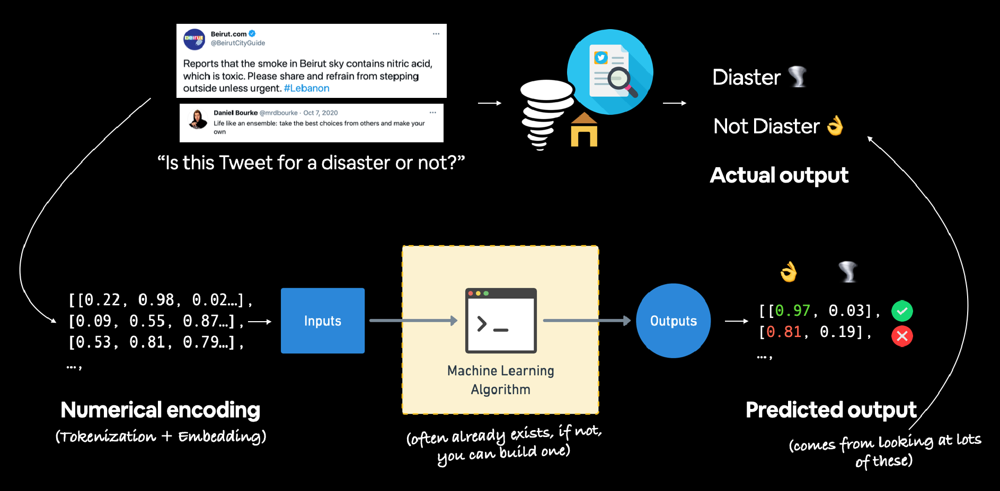

Our USE has done the best performance overall compared to all other models, even our 10% data has done considerably well too.
Let's get comparison of f1-score as sorted bar plot.
08 Natural Language Processing with TensorFlow¶

*A few examples of Natural Language Processing (NLP) or Natural Language Understanding (NLU) problems. Often referred as sequence problems (as in going from one sequence to another).
The main goal of NLP, is to derive information from natural language.
Natural Language is a broad term, but can be classified as anything with: Text and Speech - Whether it be email to blogpost, or voice commands from phones to movies
There are many different things you may want to utilise with NLP.
Say you're building an email classifier, and want to scan incoming mail to classify them as spam or not spam.
Or analyze customer query/complaints, and filing them under the category of complaints/problems for the business to solve and/or keep track of.
Note: These types of data are referred as sequence, as sentences are a sequence of words. Common term for NLP problems is called seq2seq. In other words, finding info of one sequence to produce another sequence. (e.g. convertin a speech command to a seqence of text-based steps).
To try out NLP, we're going to practice with the steps we've done before already, but on text data:
Text > Turn to numbers > Build a model > Train model for patterns > use patterns (for predictions)
Resource: Great overview of NLP and the different problems within it, A simple Introduction to NLP.
What we're covering¶
- Downloading a text dataset
- Visualizing text data
- Converting text into numbers using tokenization
- Turning our tokenized text into an embedding
- Modelling a text dataset
- Starting with a basline (TF-IDF)
- Building several deep learning text models
- Dense LSTM, GRU, Conv1D, Transfer learning
- Comparing the performance of each of our models
- Combing our models into an ensemble
- Saving and loading a trained model
- Find the most wrong predictions
#get helper functions from course
!curl -O https://raw.githubusercontent.com/mrdbourke/tensorflow-deep-learning/main/extras/helper_functions.py
#import helper functions
import sys, os
sys.path.append(os.getcwd())
import sklearn
from helper_functions import unzip_data, create_tensorboard_callback, plot_loss_curves, compare_historys
% Total % Received % Xferd Average Speed Time Time Time Current
Dload Upload Total Spent Left Speed
0 0 0 0 0 0 0 0 --:--:-- --:--:-- --:--:-- 0
100 10246 100 10246 0 0 327k 0 --:--:-- --:--:-- --:--:-- 357k
Download a text dataset¶
Let's download the text dataset of Real or Not? dataset from Kaggle, containing tweets about natural disasters.
Real tweets talk about actual disasters:
Jetstar and Virgin forced to cancel Bali flights again because of ash from Mount Raung volcano.
Not real tweets are not about actual disasters, and can be of any substance:
Education is the most powerful weapon which you can use to change the world. - Nelson Mandela #quote
Data has been downloaded, and uploaded as a zip file.
# download dataset text
!curl -O https://storage.googleapis.com/ztm_tf_course/nlp_getting_started.zip
# unzip data
unzip_data('nlp_getting_started.zip')
% Total % Received % Xferd Average Speed Time Time Time Current
Dload Upload Total Spent Left Speed
0 0 0 0 0 0 0 0 --:--:-- --:--:-- --:--:-- 0
0 0 0 0 0 0 0 0 --:--:-- --:--:-- --:--:-- 0
100 593k 100 593k 0 0 1465k 0 --:--:-- --:--:-- --:--:-- 1471k
Unzipping gives us the following data:
sample_submission.csv- example file of how you'd submit predictions into Kaggle competitiontrain.csv- Training data of tweetstest.csv- Testing data of tweets
Visualizing a text dataset¶
Let's explore and become one with the data :)
Our data is only as .csv file - let's change them into pandas DataFrame.
Reading: CSV is one format you'll encounter with text data. There may also be
.txtor.jsonfiles that have their own ways of workings. There are reading materials about it here:
# turn .csv files into pandas dataframe
import pandas as pd
train_df = pd.read_csv('train.csv')
test_df = pd.read_csv('test.csv')
train_df.head()
| id | keyword | location | text | target | |
|---|---|---|---|---|---|
| 0 | 1 | NaN | NaN | Our Deeds are the Reason of this #earthquake M... | 1 |
| 1 | 4 | NaN | NaN | Forest fire near La Ronge Sask. Canada | 1 |
| 2 | 5 | NaN | NaN | All residents asked to 'shelter in place' are ... | 1 |
| 3 | 6 | NaN | NaN | 13,000 people receive #wildfires evacuation or... | 1 |
| 4 | 7 | NaN | NaN | Just got sent this photo from Ruby #Alaska as ... | 1 |
Remember to shuffle your training data - even if it looks like it may have been shuffled before (but not ur test data!)
# shuffle training dataframe
train_df_shuffled = train_df.sample(frac=1,random_state=35) # shuffle state to 35 for reproducibility
# frac=1 > sample over 100% of data. If say its frac=0.5, shuffle 50%, and drop the other 50% of data
train_df_shuffled.head()
| id | keyword | location | text | target | |
|---|---|---|---|---|---|
| 6229 | 8892 | snowstorm | Dallas, TX | 'Snowstorm' 36'x36' oil on canvas (2009) http:... | 0 |
| 6357 | 9087 | structural%20failure | NaN | Virgin galactic crash: early unlocking of brak... | 1 |
| 848 | 1228 | blizzard | United States | @LoneWolffur BRUH *dies* | 0 |
| 2976 | 4273 | drowning | Madison, WI | @NigelTanner1 Believe it or not we've had too ... | 1 |
| 2083 | 2992 | dead | NaN | #AskCharley #Emmerdale How emotional are you t... | 0 |
See how our training data have a target column?
We'll write code that finds pattern in the text column of the dataset, to predict the value of the target column.
Note our test dataset does not have target column.

Example text classification inputs and outpus for the problem of classifying whether a tweet is about a disaster or not.
test_df.head()
| id | keyword | location | text | |
|---|---|---|---|---|
| 0 | 0 | NaN | NaN | Just happened a terrible car crash |
| 1 | 2 | NaN | NaN | Heard about #earthquake is different cities, s... |
| 2 | 3 | NaN | NaN | there is a forest fire at spot pond, geese are... |
| 3 | 9 | NaN | NaN | Apocalypse lighting. #Spokane #wildfires |
| 4 | 11 | NaN | NaN | Typhoon Soudelor kills 28 in China and Taiwan |
Notice how the target column is not in test? Our job is to predict it.
Let's check how many examples of each target we have.
# how many examples of each class?
train_df.target.value_counts()
target 0 4342 1 3271 Name: count, dtype: int64
# percentage spread of example
train_df.target.value_counts(True)
target 0 0.57034 1 0.42966 Name: proportion, dtype: float64
We're dealing with two targets, making this a binary classification. It is fairly balanced, with 57% not real (negative), and 43% real (positive).
What about the total sample size?
# how many samples in total?
print(f'Total train data: {len(train_df)}')
print(f'Total test data: {len(test_df)}')
print(f'Total data: {len(train_df) + len(test_df)}')
Total train data: 7613 Total test data: 3263 Total data: 10876
We've got a pretty large split in testing training data, usually 90/10 or 80/20 training to test is suffice for the work.
Let's again visualize our data, but this time in random samples, rather than it's sequential order.
# let's visualize some random training examples
import random
random_index = random.randint(0,len(train_df)-5) # create a random starting point index, that is not higher than dataframe's index
# why -5 instead of whole length? will be explained later down
for row in train_df_shuffled[['text','target']][random_index:random_index+5].itertuples():
# text and target need [[]], as it is multiple variables being selected, not a singular variable (which just uses [])
# rand:rand+5 - basically getting our random index as starting point, then getting the next 5 tweets in sequence (which is why -5 is there, or else it'll return nothing as index position non existent)
# .itertuples() - iterates through all data given to it, and converting them into tuples for printing/displaying
_,text,target = row # _ = a throwaway variable, which is our index number
print(f'Target: {target}', '(real disaster)' if target > 0 else '(not disaster)')
print(f'Text:\n{text}\n')
print('\n')
Target: 0 (not disaster) Text: The fear of the Lord is the start of knowledge: but the foolish have no use for wisdom and teaching (Amsal 1:7) Target: 1 (real disaster) Text: @1acd4900c1424d1 @FoxNews no one is rioting burning down buildings or looting. Target: 0 (not disaster) Text: If you don't have anything nice to say you can come sit with me. Target: 1 (real disaster) Text: Suicide Bomber Kills More Than a Dozen in Saudi Mosque: Saudi Arabia have started experiencing some terrorist ... http://t.co/PIoY1O54f4 Target: 0 (not disaster) Text: @GoP establishment is working overtime to derail #DONZILLA... @realDonaldTrump #Trump2016 https://t.co/XVaOQo4EgR
Split data into training and validation data¶
As our test set has no labels, we still need a way to evaluate our model's performance. So we'll split off some training data to become our validation data.
When the model trains, it'll only see our training data - and we can use our validation data as fresh unseen data to benchmark the model.
We will convert the pandas series, into a string (of text), and lists of integers (for labels) for ease of use later.
Scikit-learn train_test_split() method will be used to dedicate 10% of training, as our validation.
from sklearn.model_selection import train_test_split
# use train test split to split training data into validation as well
train_sentences, val_sentences, train_labels, val_labels = train_test_split(train_df_shuffled['text'].to_numpy(),
train_df_shuffled['target'].to_numpy(),
test_size=0.1, # dedicate 10% of samples into validation
random_state=35) # random state for reproducibility
# check lengths of data
len(train_sentences), len(val_sentences), len(train_labels), len(val_labels)
(6851, 762, 6851, 762)
# view the first 10 training data and it's labels
train_sentences[:10], train_labels[:10]
(array(['EE recalls Power Bar phone chargers after explosion burns woman \x89ÛÒ The Register http://t.co/lhTvKcoISo',
'@SterlingKnight Who had a car crashsterling!Who was driving in the carMel or JoeySterling Knight???????',
"A little piece I wrote for the Avalanche Designs blog! I'd appreciate it greatly if you checked it out :-) https://t.co/rfvjh58eF2",
'Wtf this mom just drowned her child?!',
"Wreckage 'Conclusively Confirmed' as From MH370: Malaysia PM: Investigators and the families of those who were... http://t.co/2Jr3Yo55dr",
'#pakistan#news# NANKANA SAHIB City News: Electrocuted From Our Correspondent NANKANA SAHIB: A youth was electr... http://t.co/WERK9qibVV',
'Video: Fire burns two apartment buildings and blows up car in Manchester http://t.co/5BGcw3EzB5',
"@ScottDPierce @billharris_tv @HarrisGle @Beezersun I'm forfeiting this years fantasy football pool out of fear I may win n get my ass kicked",
'#Saudi Arabia: #Abha: Fatalities reported following suicide bombing at mosque; avoid area http://t.co/1xW0Z8ZeqW',
'U.S. Forest Service says spending more than half of budget on fires: By Ian Simpson\x89Û_ http://t.co/UyYYrKd6q3'],
dtype=object),
array([1, 0, 0, 1, 1, 1, 1, 0, 1, 1], dtype=int64))
Converting text into numbers¶
Now we have a training and validation set, iwth labels of 0 and 1, and tweets in string form.
Question: What should we do before we can send the sentences to our ML algorithm?
Answer is to turn them into numbers, as ML algorithms requires inputs to be in numerical form.
In NLP, thee are two main concepts for turning text into numbers:
Tokenization - Straight mapping of word/character/sub-word to a numerical value. There are three ways:
- Using word-level tokenization with the sentence 'I love tensorflow' might result 'I' being
0, 'love' being1, and 'tensorflow' being2. For this case, every word in a sequence is considered a single token. - Character level tokenization such as converting 'A-Z' to
1-26. This case, every letter is considered a token. - Sub-word tokenization an in-between word and character. Where you break individual words into smaller parts, then converting those parts into numbers. Example: 'my favourite food is pizza' might become 'my, fav, avour, rite, fo, oo, od, is, piz, za' Then these sub-words are mapped to numerical values. So every word may have multiple tokens.
- Using word-level tokenization with the sentence 'I love tensorflow' might result 'I' being
Embeddings - An embedding is a representation of natural language which can be learned. Representation comes in the form of a feature vector. For example, the word 'dance' could be represented by a 5-dimensional vector
[-0.8547, 0.4559, -0.3332, 0.9877, 0.1112]. Note, the size of feature vectors is tuneable, and there are two ways to tune:- Create your own embedding - Once text has been tuned into numbers, you can put them through an embedding layer (such as
tf.keras.layers.Embedding) and an embedding representation will be learned during model training. - Reuse a pre-learned embedding - Many pre-trained embeddings ecist online. These pre-trained embeddings have often been learned on large corpuses of text (like Wikipedia) and have a good underlying representation of natural language. You can use a pre-trained embedding to initialize your model, and fine-tune it to your specific needs.
- Create your own embedding - Once text has been tuned into numbers, you can put them through an embedding layer (such as

- Example of tokenization (straight mapping of word to number) and embedding (richer representation of relationships between tokens).
Question: What level of tokenization should be used? What embedding should I choose?
Depends on your problem. You can try character-level tokenization/embeddings and word-level tokenization/embeddings, to see which performs best. Stacking is another possibility (e.g. combining the outputs of your embedding layers using tf.keras.layers.concatenate).
So what are embedding really?
What embedding really comes down to, is a vector of numbers is attached to the word, and each vector of numbers basically states the category and type of word the computer associates it with. For example:
dance [-0.85, 0.45, -0.33, 0.98, 0.11]
sing [-0.80, 0.50, -0.30, 0.95, 0.12]
cat [0.10, -0.40, 0.90, 0.20, -0.50]
From a glance, we can see how vector weights/numbers between dance and sing are quite similar, yet cat is vastly different from the other 2. The computer is finding the relation of words to each other, creating a multi-dimensional plot, that has word clusters relating to one another, and other clusters sitting somewhere else in the spectrum.
We're currently seeing a vector size of 5 - in reality, the vector size can be as big as you want. Usually the large datasets for contextual understanding often require high vector size. While small vector sizes are often toy exemplars, or simple binary classification of positive or negative.
Text vectorization (tokenization)¶
We'll practice tokenization, aka mapping words to numbers first.
For tokenization, we'll use a helpful preprocessing layer:
tf.keras.layers.experimental.preprocessing.TextVectorization
The TextVectorizatiom layer takes the following parameters:
max_tokens- The maximum number of words in your vocabulary (e.g. a set hardcap like 10,000 or every unique word in dataset), includes a value for OOV (out of vocabulary) tokens.standardize- Method for standardizing text. Default is'lower_and_strip_punctuation', which lower caps all text, and removed punctuation marks (Don't > dont).split- How to split text, default is'whitespace'which splits on spaces.ngrams- How many words to contain per token split, for example,ngrams=2splits tokens into continuous sequences of 2 - Where each token contains 2 words.output_mode- How to output tokens, can beinteger(mapping),binary(one-hot encode),countortf-idf.output_sequence_length- Length of tokenized sequence to output. For example, ifoutput_sequence_length=150, all tokenized sequences will be 150 tokens long.pad_to_max_tokens- Defauls toFalseifTrue. The output feature axis will be padded tomax_tokenseven if the number of unique tokens in the vocabulary is less thanmax_tokens. Valid in certain modes.- Aka, if
pad_to_max_tokens = False, and your unique words is 800, the size will be 800 - Conversly for
True, and max is 1,000, even if unique words are 800, the size will be 1,000. The last 200 tokens is padded out with0.
- Aka, if
Let's see them in action.
import tensorflow as tf
from tensorflow.keras.layers import TextVectorization
# use default textvectorization variable
text_vectorizer = TextVectorization(max_tokens=None, # no set max number for vector (number auto sets to all unique vocab of data)
standardize='lower_and_strip_punctuation', # how to text processing
split='whitespace', # how to split tokens
ngrams=None, # create groups of n-words?
output_mode='int', # how to map tokens to numbers
output_sequence_length=None) # how long should the output sequence of tokens be?
We've initialized TextVectorization object with default settings, but let's customize it a little bit more to fit our use case.
Let's set values for max_tokens and output_sequence_length.
For max_tokens (the number of words in the vocab), multiples of 10,000 (10,000, 20,000, 30,000) or the exact number of unique words in your text (e.g. 32,179) are common values.
For our use case, we'll use 10,000.
And for the output_sequence_length, we'll use the average number of tokens per Tweet in train data. First we need to find it.
# find average number of tokens (words) in training tweets
round(sum([len(i.split()) for i in train_sentences])/len(train_sentences))
# step by step:
# i in train_sentences > for every sentence(tweet) in train_sentences
# i.split() > split for every white space, getting words separately (empty brackets default to whitespace)
# len([...]) > find length of split's every separated words, in the sentence
# sum(...) > sum up all length value, getting every word from train_sentences
# /len(...) > divide it by number of sentences in train_sentences
# round > to nearest full number for the average words per sentence(tweet)
15
Why use average, instead of all texts?
Problem with TextVectorization, is there is only a set length it'll use for every sample. To find a middle ground for tweets, average is the best results. Using the longest result gives us lots of empty spaces, and slower training, and shorter ones don't give the model enough context. So average is used as a middle point to satisfy both sides.
Note it may not apply to ALL forms of text, like text summarizations, or concentrated meanings in other areas.
Now let's create anothe TextVectorization object using our custom parameters.
# setup text vectorization with custom variables
max_vocab_length = 10000 # max number of words to have in our vocabulary
max_length = 15 # max length our sequence will be (e.g. how many words from a Tweet our model will see)
text_vectorizer = TextVectorization(max_tokens=max_vocab_length,
output_mode='int',
output_sequence_length=max_length)
To map our TextVectorization instance text_vectorizer to our data, we can call the adapt() method on it whilst passing it our training text.
# fit the text vectorizer to the training text
text_vectorizer.adapt(train_sentences)
Training data's mapped! Let's try our text_vectorizer on a custom sentence (something we'll similarly see in training data).
# create sample sentence and tokenize it
sample_sentence = "There's a flood in my street!"
text_vectorizer([sample_sentence])
<tf.Tensor: shape=(1, 15), dtype=int64, numpy=
array([[277, 3, 208, 4, 13, 724, 0, 0, 0, 0, 0, 0, 0,
0, 0]], dtype=int64)>
Looks like we got a way to turn our text into numbers (word-level tokenization). 0's are distributed at end of returned tensor, due to out input length of 15, but our sample_sentence not being that long. So it will always output 15 numbers.
Let's try our text_vectorizer on a few random sentences.
# Choose a random sentence from the training dataset and tokenize it
random_sentence = random.choice(train_sentences)
print(f'Original text:\n{random_sentence}\
\n\nVectorized version:')
text_vectorizer([random_sentence])
Original text: @Memenaar But the design decision to 'Let's make something fresh and beautiful and wonderful and then WRECK IT' is kindof odd in restrospect Vectorized version:
<tf.Tensor: shape=(1, 15), dtype=int64, numpy=
array([[ 1, 29, 2, 2531, 3938, 5, 601, 138, 444, 2493, 7,
635, 7, 2238, 7]], dtype=int64)>
Finally we can check the unique tokens in our vocab using the get_vocabulary() method.
# get the unique words in the vocabulary
words_in_vocab = text_vectorizer.get_vocabulary()
top_5_words = words_in_vocab[:5] # most common tokens ([UNK] token = 'unknown' words)
bottom_5_words = words_in_vocab[-5:] # least common tokens
print(f'Number of words in vocab: {len(words_in_vocab)}')
print(f'Top 5 most common words: {top_5_words}')
print(f'Bottom 5 least common words: {bottom_5_words}')
Number of words in vocab: 10000 Top 5 most common words: ['', '[UNK]', 'the', 'a', 'in'] Bottom 5 least common words: ['para', 'papiichampoo', 'papicongress', 'papi', 'paperwork']
Creating an Embedding using and Embedding Layer¶
We've mapped our text to numbers. Let's take it a step further and turn the numbers into an embedding.
Embedding is powerful, that it can learn during training. Rather than a static 1 = I, 2 = The, 3 = At, the word's numeric representation can be improved as a model goes through data samples.
We can see how embedding a word looks like by using the tf.keras.layers.Embedding layer.
The main parameters we're concerned about here are:
input_dim- The size of the vocabulary (e.g. `len(text_vectorizer.get_vocabulary())).output_dim- The size of output embedding vector. Example, a value of100outputs a feature vector of size100for each word. Aka number of dimensions for each word to be categorized/weighted on.embeddings_initializer- How to initialize embedding matrix, default is'uniform'which randomly initializes embedding matrix with uniform distribution. Can be changed for using pre-learned embeddings.input_length- Length of sequences being passed to embedding layer.
Let's start making the embedding layer.
tf.random.set_seed(35)
from tensorflow.keras import layers
embedding = layers.Embedding(input_dim=max_vocab_length, # set input shape
output_dim=128, # set size of embedding vector
embeddings_initializer='uniform', # default, initialize randomly
input_length=max_length, # how long each input is
name='embedding_1')
embedding
<keras.src.layers.core.embedding.Embedding at 0x1954c8a1f60>
Notice how embedding is a tensorflow layer? This is essential when using it as part of a model - as parameters (word representations) can be updated and improved upon whilst model learns.
Let's try it out on a sample sentence?
# get a random sentence from training set
random_sentence = random.choice(train_sentences)
print(f'Original text:\n{random_sentence}\
\n\nEmbedded version:')
# embed random sentence (aka turning into numerical representation)
sample_embed = embedding(text_vectorizer([random_sentence])) # words are vectorized, as embeddings are only able to read integers, not strings
sample_embed
Original text: Why did God order obliteration of ancient Canaanites? http://t.co/IkugGvByeI Embedded version:
<tf.Tensor: shape=(1, 15, 128), dtype=float32, numpy=
array([[[-0.02776916, -0.02466375, -0.04285432, ..., 0.0076225 ,
0.02346102, -0.04769401],
[-0.04588435, -0.03737517, 0.03032334, ..., -0.02892336,
-0.00773383, -0.04548035],
[-0.03129734, 0.01564746, 0.02253412, ..., -0.03567719,
0.02982188, -0.0340168 ],
...,
[-0.01769476, 0.03944026, 0.03770587, ..., -0.01558193,
0.04819353, 0.00515406],
[-0.01769476, 0.03944026, 0.03770587, ..., -0.01558193,
0.04819353, 0.00515406],
[-0.01769476, 0.03944026, 0.03770587, ..., -0.01558193,
0.04819353, 0.00515406]]], dtype=float32)>
Each token in the sentence gets turned into a 128 feature vector, for the first 15 words. (Remember shorter than 15 worded tweets, the unused space becomes 0).
# check out a single token's embedding
sample_embed[0][0]
<tf.Tensor: shape=(128,), dtype=float32, numpy=
array([-0.02776916, -0.02466375, -0.04285432, -0.00454538, -0.00554637,
0.02707822, -0.03352995, -0.00871588, 0.04994831, 0.0338969 ,
-0.03928717, -0.01941454, -0.01017485, 0.00187647, -0.01736981,
0.01455765, 0.04059011, 0.02941698, -0.0104894 , 0.03155751,
-0.03030088, -0.02839571, -0.04362049, -0.02862445, 0.03935781,
-0.03211132, 0.04944808, 0.03409939, -0.0289281 , -0.04824806,
-0.00335789, 0.02590859, 0.04226613, -0.04651484, 0.00657833,
-0.01954821, -0.01294329, -0.03831119, 0.0451144 , -0.01649096,
0.03633044, -0.0476696 , -0.0482061 , 0.02319802, -0.02299508,
-0.01133382, 0.01421347, -0.02651534, 0.04250661, -0.0082211 ,
-0.03630473, -0.02660855, -0.00503425, 0.00305108, -0.04523084,
0.0333575 , 0.02276735, 0.0402104 , -0.01265866, 0.00854464,
-0.0444563 , 0.03115512, -0.04078316, -0.0389256 , 0.03675469,
-0.03992745, -0.0351863 , 0.01610256, -0.03864801, -0.03981092,
0.02511502, 0.02111178, 0.00287204, 0.03446938, -0.01888959,
-0.00054773, -0.03051588, -0.03907398, -0.01639112, 0.04338268,
0.02796361, 0.02249802, -0.00707411, 0.0346371 , -0.00803468,
-0.04881733, 0.02172386, 0.0338614 , 0.04764079, 0.04507479,
0.01399256, 0.0006556 , -0.02310482, -0.0486598 , 0.01356239,
0.00661416, 0.04330609, -0.0021993 , -0.04003255, 0.0396376 ,
-0.01796683, 0.00135529, -0.01731227, 0.03169371, 0.00624656,
-0.02422613, 0.0181661 , 0.02071129, -0.01831472, -0.00553287,
0.04740768, 0.03185221, -0.00791875, 0.04970929, 0.04856321,
-0.00186795, 0.03382907, -0.02144008, 0.03175265, -0.04063446,
-0.03709392, 0.04894486, -0.01704733, -0.01190238, 0.02971908,
0.0076225 , 0.02346102, -0.04769401], dtype=float32)>
The values don't seem to mean much to us, but is a lot to a computer. When the model sees patterns in different samples, these values will be updated as necessary.
Note: Tokenization and Embedding are the foundation for most NLP tasks. When not sure with anything, feel free to research and conduct any experiments to further your understanding.
Modelling a text dataset¶
 Once inputs and outputs are prepared, it's a matter of figuring out which machine learning model to build in between them to bridge the gap.
Once inputs and outputs are prepared, it's a matter of figuring out which machine learning model to build in between them to bridge the gap.
We can start building an ML model, now we've turned text data into numbers.
To get plenty of practice, we'll build a series of different models, each as its own experiment. Then compare the results of each model and see which one performed best.
We'll be building the following:
- Model 0: Naive Bayes (baseline)
- Model 1: Feed-forward neural network (dense model)
- Model 2: LSTM model
- Model 3: GRU model
- Model 4: Biderictional-LSTM model
- Model 5: 1D Convolutional Neural Network
- Model 6: TensorFlow Hub Pretrained Feature Extractor
- Model 7: Same as model 6 with 10% of training data
Model 0 is the simplest to acquire as baseline, and we expect the deeper models to beat our baseline.
The experiments will go through these steps:
- Construct the model
- Train the model
- Make predictions with the model
- Track prediction evaluation metrics for later comparison
Let's get started
Model 0: Getting a baseline¶
It's important to create a baseline model, so there's a benchmark for future experiments to build and compare upon.
To create our baseline, we'll create a Scikit-Learn Pipeline using the TF-IDF (term frequency-inverse document frequency) formula to convert our words to numbers, then model them with the Multinomial Naive Bayes algorithm. This was chosen via referring to the Scikit-Learn machine learning map.
Reading: The ins and outs of TF-IDF algorithm is beyond the scope of this notebook. However the curious reader is encouraged to check out the
Scikit-Learn documentation for more.
from sklearn.feature_extraction.text import TfidfVectorizer
from sklearn.naive_bayes import MultinomialNB
from sklearn.pipeline import Pipeline
# Create tokenization and modelling pipeline
model_0 = Pipeline([
('tfidf', TfidfVectorizer()), # convert words to numbers using tfidf
('clf', MultinomialNB()) # model the text
])
# fit the pipeline to the training data
model_0.fit(train_sentences,train_labels)
Pipeline(steps=[('tfidf', TfidfVectorizer()), ('clf', MultinomialNB())])In a Jupyter environment, please rerun this cell to show the HTML representation or trust the notebook. On GitHub, the HTML representation is unable to render, please try loading this page with nbviewer.org.
Parameters
| steps | [('tfidf', ...), ('clf', ...)] | |
| transform_input | None | |
| memory | None | |
| verbose | False |
Parameters
| input | 'content' | |
| encoding | 'utf-8' | |
| decode_error | 'strict' | |
| strip_accents | None | |
| lowercase | True | |
| preprocessor | None | |
| tokenizer | None | |
| analyzer | 'word' | |
| stop_words | None | |
| token_pattern | '(?u)\\b\\w\\w+\\b' | |
| ngram_range | (1, ...) | |
| max_df | 1.0 | |
| min_df | 1 | |
| max_features | None | |
| vocabulary | None | |
| binary | False | |
| dtype | <class 'numpy.float64'> | |
| norm | 'l2' | |
| use_idf | True | |
| smooth_idf | True | |
| sublinear_tf | False |
Parameters
| alpha | 1.0 | |
| force_alpha | True | |
| fit_prior | True | |
| class_prior | None |
Benefit of such a shallow model, is training is very fast.
Let's evaluate our model and find our basline metric.
baseline_score = model_0.score(val_sentences, val_labels)
print(f'Our baseline model achieves an accuracy of: {baseline_score*100:.2f}%')
Our baseline model achieves an accuracy of: 77.95%
Let's try make some predictions with baseline model.
# make predictions
baseline_preds = model_0.predict(val_sentences)
baseline_preds[:20]
array([1, 0, 0, 0, 0, 1, 0, 0, 0, 0, 0, 0, 0, 1, 1, 0, 1, 0, 1, 0],
dtype=int64)
Question: How dows Multinomial NB work?
At it's core, it only understands how often certain words appear, depending on the problem, rather than understanding context, meaning, grammar etc. Example, it may understand fruit be commonly used if our data is labeled with healthy, conversely to Asteroid.
They are great for: Spam detecting, sentiment analysis, or classification
They count words per class it appears in. Say that free appeared 20 times, win 15, but quarterly 0, it'll understand the email that is recieved is likely spam rather than work. It converts these counts into a probability outlook for either category.
So how does it calculate probability?
Each number is represented with a probability, and the probability is multiplied with the next probability. However the numbers are very small (0.02 x 0.09 x 0.01...) This creates a problem where many words later, it practically because numerically 0 with too many small zeroes leading behind it that the computer can't recognize a value.
We instead apply log() to it, so 1.0 = 0, 0.1 = -2.3, 0.01 = -4.6 and so on. So to determine the probability, we have to find the class that is the least negative after adding all values in its log form (log(0.02) + log(0.09) + log(0.01)... which is essentially log(0.02 x 0.09 x 0.01...)). This doesn't change the probability order of words, but gives a value that is tangible for the computer to work with.
Creating an evaluation function for our model experiments¶
Let's create a helper function which takes an array of predictions and ground truth labels and computes the following:
- Accuracy
- Precision
- Recall
- F1-score
Note: The above is appropriate for classification. For something like regression problem, other metrics like MAE (mean absolute-error) would be a better choice.
# function for evaluation: accuracy, precision, recall, f1-score
from sklearn.metrics import accuracy_score, precision_recall_fscore_support
def calculate_results(y_true, y_pred):
'''
calculates model accuracy, precision, recall, and f1-score of binary class model.
Args:
y_true = true labels in the form of a 1D array
y_pred = predicted labels in the form of a 1D array
Returns a dictionary of accuracy, recall, precision, f1-score
'''
# calculate model accuracy
model_accuracy = accuracy_score(y_true,y_pred) * 100
# calculate precision, recall, and f1-score using 'weighted' average
model_precision, model_recall, model_f1, _ = precision_recall_fscore_support(y_true, y_pred, average='weighted')
model_results = {'accuracy': model_accuracy,
'precision': model_precision,
'recall': model_recall,
'f1': model_f1}
return model_results
# get baseline results
baseline_results = calculate_results(y_true=val_labels,
y_pred=baseline_preds)
baseline_results
{'accuracy': 77.95275590551181,
'precision': 0.7961640519025719,
'recall': 0.7795275590551181,
'f1': 0.7716224111267221}
Model 1: A Simple Model¶
We'll build a single layered deep model. It'll take our text and turn it into tokens, then create embedding of it, then find the average of the embedding (using Global Average Pooling). Then pass the average through a fully connected layer with one output unit and a sigmoid activationi function.
We'll also import create_tensorboard_callback() function from helper_functions.py to keep track of every results.
# create tensorboard callbak (new one needs to be formed for each model)
from helper_functions import create_tensorboard_callback
# create dir to save tensor logs
SAVE_DIR = 'model_logs'
Now tensorboard callback is formed, let's get to coding out the first deep model.
# buils model with the functional api
from tensorflow.keras import layers
inputs = layers.Input(shape=(1,), dtype='string') # inputs are 1-dimensional string
x = text_vectorizer(inputs) # turn the input text into numbers
x = embedding(x) # create an embedding of the numerized numbers
x = layers.GlobalAveragePooling1D()(x) # lower dimensionality of the embedding (try running the model without this layer and see what happens)
outputs = layers.Dense(1, activation='sigmoid')(x) # create the output layer, want binary outputs so use sigmoid activation
model_1 = tf.keras.Model(inputs, outputs, name='model_1_dense') # construct the model
Our model takes a 1-dimensional string as input (the tweet), then tokenizes and creates embedding.
We (can optionally) pool the outputs of embedding layer to reduce dimensionality of the tensor we pass to the output layer.
Finally, we pass the output of the pooling layer to a dense layer with sigmoid activation (sigmoid is used for binary class)
Before fitting, we have to compile it. Since we're working with binary classification, we'll use binary_crossentropy as our loss function and the Adam optimizer.
# compile model
model_1.compile(loss='binary_crossentropy',
optimizer=tf.keras.optimizers.Adam(),
metrics=['accuracy'])
Modile compiled, let's get a summary.
# get a summary of model
model_1.summary()
Model: "model_1_dense"
_________________________________________________________________
Layer (type) Output Shape Param #
=================================================================
input_4 (InputLayer) [(None, 1)] 0
text_vectorization_1 (Text (None, 15) 0
Vectorization)
embedding_1 (Embedding) (None, 15, 128) 1280000
global_average_pooling1d ( (None, 128) 0
GlobalAveragePooling1D)
dense_5 (Dense) (None, 1) 129
=================================================================
Total params: 1280129 (4.88 MB)
Trainable params: 1280129 (4.88 MB)
Non-trainable params: 0 (0.00 Byte)
_________________________________________________________________
_________________________________________________________________
Layer (type) Output Shape Param #
=================================================================
input_4 (InputLayer) [(None, 1)] 0
text_vectorization_1 (Text (None, 15) 0
Vectorization)
embedding_1 (Embedding) (None, 15, 128) 1280000
global_average_pooling1d ( (None, 128) 0
GlobalAveragePooling1D)
dense_5 (Dense) (None, 1) 129
=================================================================
Total params: 1280129 (4.88 MB)
Trainable params: 1280129 (4.88 MB)
Non-trainable params: 0 (0.00 Byte)
_________________________________________________________________
Most of the trainable parameters are contained within embedding layer. The way it came up with 1,280,000 trainable parameters, is through embedding size of 128 (output_dim=128) for a vocab size of 10,000 (input_dim=10000).
Let's fit the training data on for 5 epochs, and we'll use tensorboard callback function to make sure our model's training metrics are logged.
# fit the model
model_1_history = model_1.fit(train_sentences,
train_labels,
epochs=5,
validation_data=(val_sentences,val_labels),
callbacks=[create_tensorboard_callback(dir_name=SAVE_DIR, # direct callback to directory save location
experiment_name='simple_dense_model')]) # attach name to callback
Saving TensorBoard log files to: model_logs/simple_dense_model/20260101-180018 Epoch 1/5 215/215 [==============================] - 4s 15ms/step - loss: 0.6114 - accuracy: 0.6936 - val_loss: 0.5396 - val_accuracy: 0.7480 Epoch 2/5 215/215 [==============================] - 3s 15ms/step - loss: 0.4408 - accuracy: 0.8206 - val_loss: 0.4786 - val_accuracy: 0.7703 Epoch 3/5 215/215 [==============================] - 3s 14ms/step - loss: 0.3470 - accuracy: 0.8599 - val_loss: 0.4587 - val_accuracy: 0.7874 Epoch 4/5 215/215 [==============================] - 3s 15ms/step - loss: 0.2842 - accuracy: 0.8905 - val_loss: 0.4707 - val_accuracy: 0.7913 Epoch 5/5 215/215 [==============================] - 3s 15ms/step - loss: 0.2376 - accuracy: 0.9110 - val_loss: 0.4829 - val_accuracy: 0.7887
Now let's check performance on validation set.
model_1.evaluate(val_sentences,val_labels)
24/24 [==============================] - 0s 2ms/step - loss: 0.4831 - accuracy: 0.7887
[0.48308464884757996, 0.7887139320373535]
Before continuing, let's touch on removing aspects of model_1 and see what results come of it, so we better understand whats going on under the hood.
From code suggestion, we will remove GlobalAveragePooling1D and see what happens.
inputs = layers.Input(shape=(1,), dtype='string') # inputs are 1-dimensional string
x = text_vectorizer(inputs) # turn the input text into numbers
x = embedding(x) # create an embedding of the numerized numbers
# x = layers.GlobalAveragePooling1D()(x) # remove globalavgpool and see what happens
outputs = layers.Dense(1, activation='sigmoid')(x) # create the output layer, want binary outputs so use sigmoid activation
model_1_play = tf.keras.Model(inputs, outputs, name='model_1_dense') # construct the model
model_1_play.summary()
Model: "model_1_dense"
_________________________________________________________________
Layer (type) Output Shape Param #
=================================================================
input_1 (InputLayer) [(None, 1)] 0
text_vectorization_1 (Text (None, 15) 0
Vectorization)
embedding_1 (Embedding) (None, 15, 128) 1280000
dense_2 (Dense) (None, 15, 1) 129
=================================================================
Total params: 1280129 (4.88 MB)
Trainable params: 1280129 (4.88 MB)
Non-trainable params: 0 (0.00 Byte)
_________________________________________________________________
_________________________________________________________________
Layer (type) Output Shape Param #
=================================================================
input_1 (InputLayer) [(None, 1)] 0
text_vectorization_1 (Text (None, 15) 0
Vectorization)
embedding_1 (Embedding) (None, 15, 128) 1280000
dense_2 (Dense) (None, 15, 1) 129
=================================================================
Total params: 1280129 (4.88 MB)
Trainable params: 1280129 (4.88 MB)
Non-trainable params: 0 (0.00 Byte)
_________________________________________________________________
We see that the only changes from removing globalavgpool, is one less layer, and now our dense layer receives (None,15,1), rather than (None,1).
model_1_play.compile(loss='binary_crossentropy',
optimizer=tf.keras.optimizers.Adam(),
metrics=['Accuracy'])
model_1_history = model_1_play.fit(train_sentences,
train_labels,
epochs=5,
validation_data=(val_sentences,val_labels),
callbacks=[create_tensorboard_callback(dir_name=SAVE_DIR,
experiment_name='simple_dense_model_play')])
Saving TensorBoard log files to: model_logs/simple_dense_model_play/20260101-175956 Epoch 1/5 1/215 [..............................] - ETA: 2s - loss: 1.7953 - accuracy: 0.4375Epoch 1/5 215/215 [==============================] - 0s 2ms/step - loss: 1.6830 - accuracy: 0.5220 - val_loss: 1.9739 - val_accuracy: 0.4829 Epoch 2/5 215/215 [==============================] - 0s 2ms/step - loss: 1.8016 - accuracy: 0.5145 - val_loss: 1.4892 - val_accuracy: 0.5446 Epoch 3/5 215/215 [==============================] - 0s 2ms/step - loss: 1.5579 - accuracy: 0.5141 - val_loss: 1.3470 - val_accuracy: 0.5420 Epoch 4/5 215/215 [==============================] - 0s 2ms/step - loss: 1.5797 - accuracy: 0.5097 - val_loss: 1.2323 - val_accuracy: 0.4593 Epoch 5/5 215/215 [==============================] - 0s 2ms/step - loss: 1.7024 - accuracy: 0.5201 - val_loss: 1.2374 - val_accuracy: 0.5407
Error should have been expected, as output dense layer is meant for class prediction, like a 1 or 0 scenario over entirety of scentence. GlobalAvgPool is meant to solve that issue, by pooling our 2D data (15,128) of 15 words, and 128 vectors into a 1D data structure for the output to predict on, and is not meant to recieve more due to nature of our problem.
But what if we accepted
(15,128)? This gives the1or0option for every word, rather than sentence as a whole. Out problem is not to predict disaster relation based on word choice, but whether the sentence as a whole is related to disaster or not.
What happens when we remove embedding?¶
Let's try remove embedding from our next playtest.
inputs = layers.Input(shape=(1,), dtype='string') # inputs are 1-dimensional string
x = text_vectorizer(inputs) # turn the input text into numbers
# x = embedding(x) # remove embedding
# x = layers.GlobalAveragePooling1D()(x)
outputs = layers.Dense(1, activation='sigmoid')(x) # create the output layer, want binary outputs so use sigmoid activation
model_1_play = tf.keras.Model(inputs, outputs, name='model_1_dense') # construct the model
GlobalAvgPool also has to be removed, because embedding is what creates a 3D tensor for our vectorized data, to store relation of words. But without embedding (None,15,128), we only have vectorization of (None,15), which makes pooling useless - What poling would do is pool the text vector values together. But that makes no logical sense in destroying the information of text data through averaging out value.
model_1_play.summary()
Model: "model_1_dense"
_________________________________________________________________
Layer (type) Output Shape Param #
=================================================================
input_3 (InputLayer) [(None, 1)] 0
text_vectorization_1 (Text (None, 15) 0
Vectorization)
dense_4 (Dense) (None, 1) 16
=================================================================
Total params: 16 (64.00 Byte)
Trainable params: 16 (64.00 Byte)
Non-trainable params: 0 (0.00 Byte)
_________________________________________________________________
_________________________________________________________________
Layer (type) Output Shape Param #
=================================================================
input_3 (InputLayer) [(None, 1)] 0
text_vectorization_1 (Text (None, 15) 0
Vectorization)
dense_4 (Dense) (None, 1) 16
=================================================================
Total params: 16 (64.00 Byte)
Trainable params: 16 (64.00 Byte)
Non-trainable params: 0 (0.00 Byte)
_________________________________________________________________
model_1_play.compile(loss='binary_crossentropy',
optimizer=tf.keras.optimizers.Adam(),
metrics=['accuracy'])
model_1_history = model_1_play.fit(train_sentences,
train_labels,
epochs=50,
validation_data=(val_sentences,val_labels),
callbacks=[create_tensorboard_callback(dir_name=SAVE_DIR,
experiment_name='simple_dense_model_play')])
Saving TensorBoard log files to: model_logs/simple_dense_model_play/20260101-175926 Epoch 1/50 215/215 [==============================] - 1s 3ms/step - loss: 1.8462 - accuracy: 0.5239 - val_loss: 1.7699 - val_accuracy: 0.4895 Epoch 2/50 215/215 [==============================] - 0s 2ms/step - loss: 1.7598 - accuracy: 0.5177 - val_loss: 1.4893 - val_accuracy: 0.5354 Epoch 3/50 215/215 [==============================] - 0s 2ms/step - loss: 1.4989 - accuracy: 0.5100 - val_loss: 1.2470 - val_accuracy: 0.5420 Epoch 4/50 215/215 [==============================] - 0s 2ms/step - loss: 1.5690 - accuracy: 0.5094 - val_loss: 1.3416 - val_accuracy: 0.4790 Epoch 5/50 215/215 [==============================] - 0s 2ms/step - loss: 1.7528 - accuracy: 0.5132 - val_loss: 1.1263 - val_accuracy: 0.5276 Epoch 6/50 215/215 [==============================] - 0s 2ms/step - loss: 1.5384 - accuracy: 0.5106 - val_loss: 2.3764 - val_accuracy: 0.5472 Epoch 7/50 215/215 [==============================] - 0s 2ms/step - loss: 2.2150 - accuracy: 0.5139 - val_loss: 1.6320 - val_accuracy: 0.5026 Epoch 8/50 215/215 [==============================] - 1s 2ms/step - loss: 1.6563 - accuracy: 0.5138 - val_loss: 1.4117 - val_accuracy: 0.4908 Epoch 9/50 215/215 [==============================] - 0s 2ms/step - loss: 1.7265 - accuracy: 0.5074 - val_loss: 1.3701 - val_accuracy: 0.5171 Epoch 10/50 215/215 [==============================] - 0s 2ms/step - loss: 1.7315 - accuracy: 0.5138 - val_loss: 1.0647 - val_accuracy: 0.5052 Epoch 11/50 215/215 [==============================] - 0s 2ms/step - loss: 1.6469 - accuracy: 0.5065 - val_loss: 0.8101 - val_accuracy: 0.5381 Epoch 12/50 215/215 [==============================] - 0s 2ms/step - loss: 1.5016 - accuracy: 0.5158 - val_loss: 1.2766 - val_accuracy: 0.4974 Epoch 13/50 215/215 [==============================] - 0s 2ms/step - loss: 1.5594 - accuracy: 0.5169 - val_loss: 1.2826 - val_accuracy: 0.4764 Epoch 14/50 215/215 [==============================] - 0s 2ms/step - loss: 1.5913 - accuracy: 0.5075 - val_loss: 1.3626 - val_accuracy: 0.5262 Epoch 15/50 215/215 [==============================] - 0s 2ms/step - loss: 1.5184 - accuracy: 0.5214 - val_loss: 1.4339 - val_accuracy: 0.4829 Epoch 16/50 215/215 [==============================] - 0s 2ms/step - loss: 1.7790 - accuracy: 0.5177 - val_loss: 1.2907 - val_accuracy: 0.5026 Epoch 17/50 215/215 [==============================] - 0s 2ms/step - loss: 1.6845 - accuracy: 0.5131 - val_loss: 1.2419 - val_accuracy: 0.4961 Epoch 18/50 215/215 [==============================] - 0s 2ms/step - loss: 1.5821 - accuracy: 0.5212 - val_loss: 1.7798 - val_accuracy: 0.5223 Epoch 19/50 215/215 [==============================] - 0s 2ms/step - loss: 1.7493 - accuracy: 0.5154 - val_loss: 1.0011 - val_accuracy: 0.4895 Epoch 20/50 215/215 [==============================] - 0s 2ms/step - loss: 1.9026 - accuracy: 0.5227 - val_loss: 1.2917 - val_accuracy: 0.5013 Epoch 21/50 215/215 [==============================] - 0s 2ms/step - loss: 1.6969 - accuracy: 0.5097 - val_loss: 1.5167 - val_accuracy: 0.5341 Epoch 22/50 215/215 [==============================] - 0s 2ms/step - loss: 1.4844 - accuracy: 0.5142 - val_loss: 1.1275 - val_accuracy: 0.5236 Epoch 23/50 215/215 [==============================] - 0s 2ms/step - loss: 1.6929 - accuracy: 0.5096 - val_loss: 1.1899 - val_accuracy: 0.5144 Epoch 24/50 215/215 [==============================] - 0s 2ms/step - loss: 1.5901 - accuracy: 0.5255 - val_loss: 1.4747 - val_accuracy: 0.4934 Epoch 25/50 215/215 [==============================] - 0s 2ms/step - loss: 1.7160 - accuracy: 0.5074 - val_loss: 1.2196 - val_accuracy: 0.4961 Epoch 26/50 215/215 [==============================] - 0s 2ms/step - loss: 1.8167 - accuracy: 0.5096 - val_loss: 1.6172 - val_accuracy: 0.5026 Epoch 27/50 215/215 [==============================] - 0s 2ms/step - loss: 1.8681 - accuracy: 0.5112 - val_loss: 1.6092 - val_accuracy: 0.5367 Epoch 28/50 215/215 [==============================] - 0s 2ms/step - loss: 1.4768 - accuracy: 0.5150 - val_loss: 1.2716 - val_accuracy: 0.4790 Epoch 29/50 215/215 [==============================] - 0s 2ms/step - loss: 1.6234 - accuracy: 0.5160 - val_loss: 1.2128 - val_accuracy: 0.5197 Epoch 30/50 215/215 [==============================] - 0s 2ms/step - loss: 1.6478 - accuracy: 0.5183 - val_loss: 1.2187 - val_accuracy: 0.5000 Epoch 31/50 215/215 [==============================] - 0s 2ms/step - loss: 1.5809 - accuracy: 0.5190 - val_loss: 1.4719 - val_accuracy: 0.5289 Epoch 32/50 215/215 [==============================] - 0s 2ms/step - loss: 1.6763 - accuracy: 0.5101 - val_loss: 1.3407 - val_accuracy: 0.4816 Epoch 33/50 215/215 [==============================] - 0s 2ms/step - loss: 1.7421 - accuracy: 0.5068 - val_loss: 1.1260 - val_accuracy: 0.4974 Epoch 34/50 215/215 [==============================] - 0s 2ms/step - loss: 1.4120 - accuracy: 0.5192 - val_loss: 1.5099 - val_accuracy: 0.4948 Epoch 35/50 215/215 [==============================] - 0s 2ms/step - loss: 1.6331 - accuracy: 0.5115 - val_loss: 1.1170 - val_accuracy: 0.5302 Epoch 36/50 215/215 [==============================] - 0s 2ms/step - loss: 1.4872 - accuracy: 0.5192 - val_loss: 1.4653 - val_accuracy: 0.5236 Epoch 37/50 215/215 [==============================] - 0s 2ms/step - loss: 1.7359 - accuracy: 0.5072 - val_loss: 1.1196 - val_accuracy: 0.4843 Epoch 38/50 215/215 [==============================] - 0s 2ms/step - loss: 1.6311 - accuracy: 0.5158 - val_loss: 1.2174 - val_accuracy: 0.5394 Epoch 39/50 215/215 [==============================] - 0s 2ms/step - loss: 1.7598 - accuracy: 0.5141 - val_loss: 0.9792 - val_accuracy: 0.4882 Epoch 40/50 215/215 [==============================] - 0s 2ms/step - loss: 1.5903 - accuracy: 0.5169 - val_loss: 1.1705 - val_accuracy: 0.5341 Epoch 41/50 215/215 [==============================] - 0s 2ms/step - loss: 1.6452 - accuracy: 0.5113 - val_loss: 1.6912 - val_accuracy: 0.5066 Epoch 42/50 215/215 [==============================] - 0s 2ms/step - loss: 1.7149 - accuracy: 0.5247 - val_loss: 1.3047 - val_accuracy: 0.5052 Epoch 43/50 215/215 [==============================] - 0s 2ms/step - loss: 1.8174 - accuracy: 0.5115 - val_loss: 1.3518 - val_accuracy: 0.4856 Epoch 44/50 215/215 [==============================] - 0s 2ms/step - loss: 1.6797 - accuracy: 0.5170 - val_loss: 1.1322 - val_accuracy: 0.5184 Epoch 45/50 215/215 [==============================] - 0s 2ms/step - loss: 1.9386 - accuracy: 0.5118 - val_loss: 1.5417 - val_accuracy: 0.5223 Epoch 46/50 215/215 [==============================] - 0s 2ms/step - loss: 1.5904 - accuracy: 0.5087 - val_loss: 1.6973 - val_accuracy: 0.5302 Epoch 47/50 215/215 [==============================] - 0s 2ms/step - loss: 1.7131 - accuracy: 0.5182 - val_loss: 1.3681 - val_accuracy: 0.4895 Epoch 48/50 215/215 [==============================] - 0s 2ms/step - loss: 1.4960 - accuracy: 0.5158 - val_loss: 1.7570 - val_accuracy: 0.5118 Epoch 49/50 215/215 [==============================] - 0s 2ms/step - loss: 1.5808 - accuracy: 0.5106 - val_loss: 1.1921 - val_accuracy: 0.4856 Epoch 50/50 215/215 [==============================] - 0s 2ms/step - loss: 1.6087 - accuracy: 0.5205 - val_loss: 1.0284 - val_accuracy: 0.5367
With vector values alone, the model does not make any insightful learning on the data, because the way data is given is not understandable to it.
Because you got a series of vector number ([3, 72, 92, 23...]), the model won't know the meaning or context of each number is supposed to be. So it learns arbitrary correlation based on number, like high values = to 1, and vice versa for 0.
What the dense layer Dense(sigmoid) is learning, is by treating the vector as numerical features, not words with meanings.
Now we're done with playing/experimenting, let's visualize the epoch training of model_1.
plot_loss_curves(model_1_history)
![No description has been provided for this image]()
![No description has been provided for this image]()
It appears the model is doing some overfitting on training data, evident how our blue line has a continuous trajectory, while validation has flattened. What's more noticeable is our val_loss has created a U shape, as the loss is starting to increase again.
Our next step is to make some predictions with it.
# make predictions (code will give probabilities)
model_1_pred_probs = model_1.predict(val_sentences)
model_1_pred_probs[:10]
24/24 [==============================] - 0s 1ms/step
array([[0.9434188 ],
[0.09024625],
[0.1949757 ],
[0.05776952],
[0.16404223],
[0.82559556],
[0.17666167],
[0.01323535],
[0.6406629 ],
[0.20789634]], dtype=float32)
Since our final dense layer uses sigmoid, it converts all values spewed out within a 0 to 1 value range, so it gives us in the form of probability.
For conversion to prediction classes, we'll use tf.round(), rounding below 0.5 down to 0, and the 0.5 and above to 1.
Note: In practice, your threshold for the sigmoid may not be 0.5. You might even use 0.25 if it suits your chosen evaluation metric, but this is an example of the precision-recall tradeoff. Would you rather have the model catch onto every possible Positives with the side effect of getting more False Positives, or do you want to reduce as much False Positives as possible with the side effect of getting more undetected Positives?
# Turn prediction probabilities into single dimension tensor of floats
model_1_preds = tf.squeeze(tf.round(model_1_pred_probs)) # squeeze = removes singular value dimensions
model_1_preds[:20]
<tf.Tensor: shape=(20,), dtype=float32, numpy=
array([1., 0., 0., 0., 0., 1., 0., 0., 1., 0., 0., 0., 0., 1., 1., 0., 1.,
0., 1., 0.], dtype=float32)>
Now we've got our model's predictions in class forms, we can use our calculate_results() function to compare them to the ground truth validation labels.
# calculate model_1 metrics
model_1_results = calculate_results(y_true=val_labels,
y_pred=model_1_preds)
model_1_results
{'accuracy': 78.87139107611549,
'precision': 0.7891955603519614,
'recall': 0.7887139107611548,
'f1': 0.787042669051266}
Let's then compare our results to our baseline model, and see how we're doing :)
# is our baseline model worse than model 1?
import numpy as np
np.array(list(model_1_results.values())) > np.array(list(baseline_results.values()))
array([ True, False, True, True])
Since we're going to do this comparison thing multiple times, we will form a function for efficiency.
# create helper function to compare our baseline results to model results
def compare_models(baseline_results,model_results):
for key, value in baseline_results.items():
print(f"Baseline {key}: {value:.3f}, New {key}: {model_results[key]:.3f}, Difference: {model_results[key]-value:.3f}")
compare_models(baseline_results, model_1_results)
Baseline accuracy: 77.953, New accuracy: 78.871, Difference: 0.919 Baseline precision: 0.796, New precision: 0.789, Difference: -0.007 Baseline recall: 0.780, New recall: 0.789, Difference: 0.009 Baseline f1: 0.772, New f1: 0.787, Difference: 0.015
Visualizing learned embeddings¶
Our model_1 contained embedding layer, which learned ways of representing words as feature vectors.
To further our understanding of what embedding is, let's visualize the embedding the model has learned.
Let's first look at the words in our vocab bank.
# get the vocab from the text vectorization layer
words_in_vocab = text_vectorizer.get_vocabulary()
len(words_in_vocab), words_in_vocab[:10]
(10000, ['', '[UNK]', 'the', 'a', 'in', 'to', 'of', 'and', 'i', 'is'])
Let's then check the embedding layer's weights (numerical representations of each word).
# get the weight matrix of embedding layer
embed_weights = model_1.get_layer('embedding_1').get_weights()[0]
print(embed_weights.shape) # same size as vocab, and vector size
(10000, 128)
Recurrent Neural Networks (RNNs)¶
The next series of model experiments will utilize a specific kind of neural network called a Recurrent Neural Network (RNN).
Premise of RNN is simple: use information from the past to help you with the future (basically what recurrent means). Take an input x, to compute output y based on all previous inputs.
This concept is useful when dealing with sequences, such as passages of nautral language text like tweets.
When RNN looks at a sequence of text (which is already in integer form), the patterns it learns are continually updated based on word order sequence. Such as:
- Massive earthquake last week, no?
- No massive earthquake last week.
Both contain the same words, but drastically different meanings due to word order.
Recurrent neural networks can be used for a number of sequence-based problems:
- One to one: one input, one output, such as image classification.
- One to many: one input, many outputs, such as image captioning (image input, a sequence of text as caption output).
- Many to one: many inputs, one output, such as text classification (classifying a tweet as real disaster or not real disaster).
- Many to many: many inputs, many outputs, such as machine translation (English to Spanish), or speech to text (audio wave as input, text as output).
When coming across RNNs in the wild, there are a few variants you may see:
- Long short-term memory cells (LSTMs).
- Gated recurrent units (GRUs).
- Bidirectional RNN's (passes forward and backward along a sequence, left to right and right to left).
The details of these is beyond the scope of the notebook, however we'll be focusing on using them instead. Main thing to know, is they're proven very effective at modelling sequences.
Deeper understandings of whats under the hood can be read via here:
📖 Resources:
MIT Deep Learning Lecture on Recurrent Neural Networks- explains the background of recurrent neural networks and introduces LSTMs.The Unreasonable Effectiveness of Recurrent Neural Networksby Andrej Karpathy - demonstrates the power of RNN's with examples generating various sequences.Understanding LSTMsby Chris Olah - an in-depth (and technical) look at the mechanics of the LSTM cell, possibly the most popular RNN building block.
LSTM¶
We will start with LSTM-powered RNN. To use it, we'll need to use tensorflow.keras.layers.LSTM().

Block example of the structure of RNN
Model_2 will have a very similar structure as Model_1:
Input (text) -> Tokenize -> Embedding -> Layers -> Output (label probability)
Main difference is adding LSTM layer between our embedding and output.
To prevent data leakage, we must not reuse the same embeddings trained on Model_1, as associations and relations between words have been mapped out in the embeddings. We will create another embedding layer model_2_embedding for our model. The text_vectorizer layer can be reused, as it does not update during training.
Note: The non usage of embeddings thats been trained on, is crucial if we wish to do an impartial comparison of all models, starting from no training.
# set random seed and create embedding layer
tf.random.set_seed(35)
from tensorflow.keras import layers
model_2_embedding = layers.Embedding(input_dim=max_vocab_length,
output_dim=128,
embeddings_initializer='uniform',
input_length=max_length,
name='embedding_2')
# create lstm model
inputs = layers.Input(shape=(1,), dtype='string')
x = text_vectorizer(inputs)
x = model_2_embedding(x)
print(x.shape)
x = layers.LSTM(64)(x) # return vector for whole sequence
print(x.shape)
outputs = layers.Dense(1, activation='sigmoid')(x)
model_2 = tf.keras.Model(inputs, outputs, name='model_2_LSTM')
(None, 15, 128) (None, 64)
Note: There are a plethora of parameters used for (https://www.tensorflow.org/api_docs/python/tf/keras/layers/LSTM)%5BLSTM layers]. Many of these have been tuned to run as fast as possible. The main ones we'll be using is
units(number of hidden units) andreturn_sequences(set this toTruewhen stacking LSTM or other recurrent layers).
Let's compile it using binary_crossentropy loss and the Adam optimzier.
# compile model
model_2.compile(loss='binary_crossentropy',
optimizer=tf.keras.optimizers.Adam(),
metrics=['accuracy'])
# get summary
model_2.summary()
Model: "model_2_LSTM"
_________________________________________________________________
Layer (type) Output Shape Param #
=================================================================
input_5 (InputLayer) [(None, 1)] 0
text_vectorization_1 (Text (None, 15) 0
Vectorization)
embedding_2 (Embedding) (None, 15, 128) 1280000
lstm (LSTM) (None, 64) 49408
dense_6 (Dense) (None, 1) 65
_________________________________________________________________
Layer (type) Output Shape Param #
=================================================================
input_5 (InputLayer) [(None, 1)] 0
text_vectorization_1 (Text (None, 15) 0
Vectorization)
embedding_2 (Embedding) (None, 15, 128) 1280000
lstm (LSTM) (None, 64) 49408
dense_6 (Dense) (None, 1) 65
=================================================================
Total params: 1329473 (5.07 MB)
Trainable params: 1329473 (5.07 MB)
Non-trainable params: 0 (0.00 Byte)
_________________________________________________________________
We notice we have a few more parameters before, and there is a way to calculate the params in LSTM layer. So how is it done?
We gave our LSTM an input of 64 units. While our input shape towards LSTM is (None,15,128). We multiply units with vector size (128) to get input weights (64*128), then square units (64*64) to get recurrent weights, then add 64 to get our bias giving us > (64 * 128) + (64^2) + 64 = 12,352. Then we multiply by 4 for all LSTM gates of:
- Input gate: Controls the new info that enters
- Forget gate: Controls the info to be discarded
- Cell candidate: Proposes new content
- Output gate: Controls what goes to the hidden state
So each of these need their own set of params.
Why input vector size
128and not15words?: LSTM wants to know the relationship of each word, not how many words are in the tweet. With the relationship (which is encoded in our 128 vector size), it would have a feature representation of each word and can learn from it.
Why 64^2 and add 64 for bias?: Because of recurrency, we're holding information from the past to influence the present. So if we have 64 units to use, naturally, a single unit can influence all 64 units in the preceding moment, making our needed connection to be 64 times 64. For bias, each gate has its own bias vector, which helps shift activations.
Why does each gate have a bias vector? What is shift activation?: The bias is in literal terms, 'bias'. Bias is given to each gate to 'shift' its activation either left or right on the number line. Say if our weight value is
0, our sigmoid is0.5. With bias of2added to our weight, this shifts our sigmoid to0.88. The reasoning for our bias shifting the values, is that it's easierto activate the parameter from a numbered value rather than on0.
How does the gate work?: Let's use a toy sentence of
forest fire near city. > t=0:forest, t=1:fire, t=2:near, t=3:city
Forget gate: Deciding what old info to keep Example with
t=1: fire> The numbers underneath are representative of its vector size, holding info representationPrevious cell memory:
t - 1 = [0.8,0.1,0.5...]Forget gate outputsf_t = [0.9,0.1,0.5...]First hidden unit keeps 90% of previous memory - 0.80.9=0.72 Second unit, 10% of previous memory - 0.10.1=0.01 and so on.
The point of this, is forget gate is learning patterns of which vector at whichever index out of
128is important to hold information. Our problem of disaster, the forget gate will learn which vector index holds information relating to disaster, and will keep them as important by increasing multiplication value.Input gate: deciding what new info to write Like forget gate, instead of
previous cell memory, we use the current cell in front of us, and applying the same formula of multiplying with ourInput gate outputs.Cell candidate: How it combines new and old memory Cell candidate then combines the
input gate outputswithforget gate outputsby adding them together. Adding the values together per each 128 vectors, gives a sort of blended memory of old information that was relevant, while also new information that should be remembered.Output gate: deciding what to expose This lets only part of the memory flow towards our output layer, by deciding what information is relevant.
The output gate uses
tanhto squash all values between 1 and -1 as some input values may be very big.Output gate does the same with previous, of multiplying the input values of vector from the preceeding gates, with it's own output weights. Because we have a combination of current and previous word information, the output layer is able to infer upon it's rough meaning and importance. E.g. it may recognize
forestthenfireas disaster probable rather thanforestthenberry.
Finally, let's fit the model
# Fit model
model_2_history = model_2.fit(train_sentences,
train_labels,
epochs=5,
validation_data=(val_sentences, val_labels),
callbacks=[create_tensorboard_callback(SAVE_DIR,
"LSTM")])
Saving TensorBoard log files to: model_logs/LSTM/20260101-180043 Epoch 1/5 215/215 [==============================] - 7s 22ms/step - loss: 0.5106 - accuracy: 0.7492 - val_loss: 0.4713 - val_accuracy: 0.7861 Epoch 2/5 215/215 [==============================] - 4s 19ms/step - loss: 0.3164 - accuracy: 0.8698 - val_loss: 0.4874 - val_accuracy: 0.7756 Epoch 3/5 215/215 [==============================] - 4s 19ms/step - loss: 0.2174 - accuracy: 0.9178 - val_loss: 0.5801 - val_accuracy: 0.7664 Epoch 4/5 215/215 [==============================] - 4s 20ms/step - loss: 0.1550 - accuracy: 0.9434 - val_loss: 0.8286 - val_accuracy: 0.7572 Epoch 5/5 215/215 [==============================] - 5s 21ms/step - loss: 0.1098 - accuracy: 0.9580 - val_loss: 0.7806 - val_accuracy: 0.7572
Overall performance is pretty shit - all it did was severely overfit our training data, making unseen data even harder to generalize on.
Now that we have our trained lstm, let's check its predictions.
# make predictions on val data
model_2_pred_probs = model_2.predict(val_sentences)
model_2_pred_probs[:10]
24/24 [==============================] - 1s 5ms/step
array([[0.9995831 ],
[0.18783918],
[0.55610585],
[0.01041509],
[0.06313248],
[0.99942017],
[0.09987555],
[0.00708691],
[0.6772785 ],
[0.101637 ]], dtype=float32)
Let's perform the rounding to nearest integer so wew have a binary prediction data.
# round predictions to binary predsa
model_2_preds = tf.squeeze(tf.round(model_2_pred_probs)) # squeeze to remove xtra dimensionality of array
model_2_preds[:10]
<tf.Tensor: shape=(10,), dtype=float32, numpy=array([1., 0., 1., 0., 0., 1., 0., 0., 1., 0.], dtype=float32)>
Let's now calculate results, and compare to our basline model.
model_2_results = calculate_results(val_labels, model_2_preds)
model_2_results
{'accuracy': 75.7217847769029,
'precision': 0.7578013128319498,
'recall': 0.7572178477690289,
'f1': 0.7574455425047719}
# compare model 2 to baseline
compare_models(baseline_results, model_2_results)
Baseline accuracy: 77.953, New accuracy: 75.722, Difference: -2.231 Baseline precision: 0.796, New precision: 0.758, Difference: -0.038 Baseline recall: 0.780, New recall: 0.757, Difference: -0.022 Baseline f1: 0.772, New f1: 0.757, Difference: -0.014
Model_2 experimentation¶
There are a few things i want to experiment with this model to better understand it.
Structure: It has that
layers.LSTM(64), which can't be removed as that is where the lstm exist in the model. With it gone, it's just baseline model without pooling layer.
x = layers.LSTM(64, return_sequences=True)(x)
The above code was hashed out from the notebook, so I will add this in and see how this affects the model.
# set random seed and create embedding layer
tf.random.set_seed(35)
from tensorflow.keras import layers
model_2_exp_embedding = layers.Embedding(input_dim=max_vocab_length,
output_dim=128,
embeddings_initializer='uniform',
input_length=max_length,
name='embedding_2')
# create lstm model
inputs = layers.Input(shape=(1,), dtype='string')
x = text_vectorizer(inputs)
x = model_2_exp_embedding(x)
print(x.shape)
x = layers.LSTM(64, return_sequences=True)(x)
x = layers.LSTM(64)(x)
print(x.shape)
outputs = layers.Dense(1, activation='sigmoid')(x)
model_2_exp = tf.keras.Model(inputs, outputs, name='model_2_LSTM_experiment')
(None, 15, 128) (None, 64)
# Compile model
model_2_exp.compile(loss="binary_crossentropy",
optimizer=tf.keras.optimizers.Adam(),
metrics=["accuracy"])
model_2_exp.summary()
Model: "model_2_LSTM_experiment"
_________________________________________________________________
Layer (type) Output Shape Param #
=================================================================
input_6 (InputLayer) [(None, 1)] 0
text_vectorization_1 (Text (None, 15) 0
Vectorization)
embedding_2 (Embedding) (None, 15, 128) 1280000
lstm_1 (LSTM) (None, 15, 64) 49408
lstm_2 (LSTM) (None, 64) 33024
dense_7 (Dense) (None, 1) 65
=================================================================
_________________________________________________________________
Layer (type) Output Shape Param #
=================================================================
input_6 (InputLayer) [(None, 1)] 0
text_vectorization_1 (Text (None, 15) 0
Vectorization)
embedding_2 (Embedding) (None, 15, 128) 1280000
lstm_1 (LSTM) (None, 15, 64) 49408
lstm_2 (LSTM) (None, 64) 33024
dense_7 (Dense) (None, 1) 65
=================================================================
Total params: 1362497 (5.20 MB)
Trainable params: 1362497 (5.20 MB)
Non-trainable params: 0 (0.00 Byte)
_________________________________________________________________
Our model shape has changed. Let's see if oure model formula holds up for lstm_3.
Input = 64, units = 64 therefore: 4((64 * 64) + (64 * 64) + 64) = 33,024
# Fit model
model_2_exp_history = model_2_exp.fit(train_sentences,
train_labels,
epochs=5,
validation_data=(val_sentences, val_labels),
callbacks=[create_tensorboard_callback(SAVE_DIR,
"LSTM")])
Saving TensorBoard log files to: model_logs/LSTM/20260101-180110 Epoch 1/5 215/215 [==============================] - 10s 26ms/step - loss: 0.5090 - accuracy: 0.7517 - val_loss: 0.4770 - val_accuracy: 0.7808 Epoch 2/5 215/215 [==============================] - 5s 23ms/step - loss: 0.3173 - accuracy: 0.8698 - val_loss: 0.4858 - val_accuracy: 0.7756 Epoch 3/5 215/215 [==============================] - 5s 23ms/step - loss: 0.2167 - accuracy: 0.9175 - val_loss: 0.5980 - val_accuracy: 0.7612 Epoch 4/5 215/215 [==============================] - 5s 22ms/step - loss: 0.1522 - accuracy: 0.9461 - val_loss: 0.9112 - val_accuracy: 0.7520 Epoch 5/5 215/215 [==============================] - 5s 22ms/step - loss: 0.0989 - accuracy: 0.9606 - val_loss: 0.8171 - val_accuracy: 0.7612
Comparison of model_2:
Saving TensorBoard log files to: model_logs/LSTM/20251227-220630
Epoch 1/5
215/215 [==============================] - 11s 20ms/step - loss: 0.5123 - accuracy: 0.7459 - val_loss: 0.4719 - val_accuracy: 0.7861
Epoch 2/5
215/215 [==============================] - 4s 16ms/step - loss: 0.3162 - accuracy: 0.8698 - val_loss: 0.4827 - val_accuracy: 0.7756
Epoch 3/5
215/215 [==============================] - 4s 17ms/step - loss: 0.2166 - accuracy: 0.9186 - val_loss: 0.5837 - val_accuracy: 0.7612
Epoch 4/5
215/215 [==============================] - 4s 17ms/step - loss: 0.1575 - accuracy: 0.9431 - val_loss: 0.8092 - val_accuracy: 0.7651
Epoch 5/5
215/215 [==============================] - 4s 17ms/step - loss: 0.1105 - accuracy: 0.9606 - val_loss: 0.7190 - val_accuracy: 0.7546
Honestly see no variable difference between our experiment and model_2.
But what does return_sequence=True even do?:
What it does is get information of the word level sequence - because our problem is sentence level binary class, it doesn't utilize the word level information, and is then compacted down for the model to make a prediction on. Making the time to create such information pointless for our problem.
So what can return_sequence=True be used for?:
As it exposes the intermediate word-level representation of the data, rather than sentence/text block level, that extra detail with words can be useful for language translation, summarization, or word-level predictions (instead of predicting disaster or not based on sentence, we can predict what word correlates to disaster).
AKA, if you have more than 1 item that needs to be represented per item in a block of data thats given for each training example, return_sequence is essential to keep more than 1 information into the next layer, rather than outputting the final item as a whole. This is called a timestep. So this means more than one sentences, word, phrase, etc. that needs to be represented for the problem.
Moving on to the next experimentation step:
x = layers.Dense(64, activation="relu")(x)
An optional dense layer on top of output of LSTM cell
# set random seed and create embedding layer
tf.random.set_seed(35)
from tensorflow.keras import layers
model_2_exp_embedding = layers.Embedding(input_dim=max_vocab_length,
output_dim=128,
embeddings_initializer='uniform',
input_length=max_length,
name='embedding_2')
# create lstm model
inputs = layers.Input(shape=(1,), dtype='string')
x = text_vectorizer(inputs)
x = model_2_exp_embedding(x)
print(x.shape)
x = layers.LSTM(64)(x)
print(x.shape)
x = layers.Dense(64, activation="relu")(x)
print(x.shape)
outputs = layers.Dense(1, activation='sigmoid')(x)
model_2_exp = tf.keras.Model(inputs, outputs, name='model_2_LSTM_experiment')
(None, 15, 128) (None, 64) (None, 64)
# Compile model
model_2_exp.compile(loss="binary_crossentropy",
optimizer=tf.keras.optimizers.Adam(),
metrics=["accuracy"])
model_2_exp.summary()
Model: "model_2_LSTM_experiment"
_________________________________________________________________
Layer (type) Output Shape Param #
=================================================================
input_7 (InputLayer) [(None, 1)] 0
text_vectorization_1 (Text (None, 15) 0
Vectorization)
embedding_2 (Embedding) (None, 15, 128) 1280000
lstm_3 (LSTM) (None, 64) 49408
dense_8 (Dense) (None, 64) 4160
dense_9 (Dense) (None, 1) 65
=================================================================
_________________________________________________________________
Layer (type) Output Shape Param #
=================================================================
input_7 (InputLayer) [(None, 1)] 0
text_vectorization_1 (Text (None, 15) 0
Vectorization)
embedding_2 (Embedding) (None, 15, 128) 1280000
lstm_3 (LSTM) (None, 64) 49408
dense_8 (Dense) (None, 64) 4160
dense_9 (Dense) (None, 1) 65
=================================================================
Total params: 1333633 (5.09 MB)
Trainable params: 1333633 (5.09 MB)
Non-trainable params: 0 (0.00 Byte)
_________________________________________________________________
# Fit model
model_2_exp_history = model_2_exp.fit(train_sentences,
train_labels,
epochs=5,
validation_data=(val_sentences, val_labels),
callbacks=[create_tensorboard_callback(SAVE_DIR,
"LSTM")])
Saving TensorBoard log files to: model_logs/LSTM/20260101-180140 Epoch 1/5 215/215 [==============================] - 7s 22ms/step - loss: 0.5095 - accuracy: 0.7495 - val_loss: 0.4768 - val_accuracy: 0.7874 Epoch 2/5 215/215 [==============================] - 4s 17ms/step - loss: 0.3126 - accuracy: 0.8686 - val_loss: 0.4858 - val_accuracy: 0.7690 Epoch 3/5 215/215 [==============================] - 4s 17ms/step - loss: 0.2109 - accuracy: 0.9172 - val_loss: 0.6175 - val_accuracy: 0.7664 Epoch 4/5 215/215 [==============================] - 4s 16ms/step - loss: 0.1428 - accuracy: 0.9457 - val_loss: 0.9449 - val_accuracy: 0.7598 Epoch 5/5 215/215 [==============================] - 4s 16ms/step - loss: 0.0978 - accuracy: 0.9606 - val_loss: 0.7789 - val_accuracy: 0.7454
Comparison of model_2:
Saving TensorBoard log files to: model_logs/LSTM/20251227-220630
Epoch 1/5
215/215 [==============================] - 11s 20ms/step - loss: 0.5123 - accuracy: 0.7459 - val_loss: 0.4719 - val_accuracy: 0.7861
Epoch 2/5
215/215 [==============================] - 4s 16ms/step - loss: 0.3162 - accuracy: 0.8698 - val_loss: 0.4827 - val_accuracy: 0.7756
Epoch 3/5
215/215 [==============================] - 4s 17ms/step - loss: 0.2166 - accuracy: 0.9186 - val_loss: 0.5837 - val_accuracy: 0.7612
Epoch 4/5
215/215 [==============================] - 4s 17ms/step - loss: 0.1575 - accuracy: 0.9431 - val_loss: 0.8092 - val_accuracy: 0.7651
Epoch 5/5
215/215 [==============================] - 4s 17ms/step - loss: 0.1105 - accuracy: 0.9606 - val_loss: 0.7190 - val_accuracy: 0.7546
Again there's literally no difference. Let's ask chatgpt what this extra line of code does.
So what does dense 64 activation=relu do?:
The problem is, the dense layer has the same dimension as our LSTM - Our LSTM has done all the heavy lifting in terms of the pattern finding and information learning, however our dense relu being 64, is functionally redundant to our LSTM layer, and is unable to provide any new information that can lower our loss due to expressive capacity being equal to LSTM. The dense layer only remixes and transform the layer, rather than being one that creates features.
But what would've beeen helpful with out new dense layer is either:
- Expands on dimensionality, such as dense layer of
256instead of64- which provides more representational capacity from ourLSTMlayer - Another
dense(64)underneath - creates depth-induced expressiveness, aka the extra depth/layer allows the model to more easily represent complex functions and learn complex patterns. Giving piece wise decisions and non-linear composition. - Creating
dropoutafter dense - it forces the model to not rely on any singular neuron, but to help distribute information across all neurons. It's less impactful onLSTMlayers due to the way LSTM already compresses the data.
Before we move on, lets test out dense(256) and see if it makes a variable of a difference in the results.
# set random seed and create embedding layer
tf.random.set_seed(35)
from tensorflow.keras import layers
model_2_exp_embedding = layers.Embedding(input_dim=max_vocab_length,
output_dim=128,
embeddings_initializer='uniform',
input_length=max_length,
name='embedding_2')
# create lstm model
inputs = layers.Input(shape=(1,), dtype='string')
x = text_vectorizer(inputs)
x = model_2_exp_embedding(x)
print(x.shape)
x = layers.LSTM(64)(x)
print(x.shape)
x = layers.Dense(256, activation="relu")(x)
print(x.shape)
outputs = layers.Dense(1, activation='sigmoid')(x)
model_2_exp = tf.keras.Model(inputs, outputs, name='model_2_LSTM_experiment')
(None, 15, 128) (None, 64) (None, 256)
# Compile model
model_2_exp.compile(loss="binary_crossentropy",
optimizer=tf.keras.optimizers.Adam(),
metrics=["accuracy"])
model_2_exp.summary()
Model: "model_2_LSTM_experiment"
_________________________________________________________________
Layer (type) Output Shape Param #
=================================================================
input_8 (InputLayer) [(None, 1)] 0
text_vectorization_1 (Text (None, 15) 0
Vectorization)
embedding_2 (Embedding) (None, 15, 128) 1280000
lstm_4 (LSTM) (None, 64) 49408
dense_10 (Dense) (None, 256) 16640
dense_11 (Dense) (None, 1) 257
=================================================================
Total params: 1346305 (5.14 MB)
Trainable params: 1346305 (5.14 MB)
_________________________________________________________________
Layer (type) Output Shape Param #
=================================================================
input_8 (InputLayer) [(None, 1)] 0
text_vectorization_1 (Text (None, 15) 0
Vectorization)
embedding_2 (Embedding) (None, 15, 128) 1280000
lstm_4 (LSTM) (None, 64) 49408
dense_10 (Dense) (None, 256) 16640
dense_11 (Dense) (None, 1) 257
=================================================================
Total params: 1346305 (5.14 MB)
Trainable params: 1346305 (5.14 MB)
Non-trainable params: 0 (0.00 Byte)
_________________________________________________________________
# Fit model
model_2_exp_history = model_2_exp.fit(train_sentences,
train_labels,
epochs=5,
validation_data=(val_sentences, val_labels),
callbacks=[create_tensorboard_callback(SAVE_DIR,
"LSTM")])
Saving TensorBoard log files to: model_logs/LSTM/20260101-180202 Epoch 1/5 215/215 [==============================] - 6s 19ms/step - loss: 0.5096 - accuracy: 0.7454 - val_loss: 0.4727 - val_accuracy: 0.7848 Epoch 2/5 215/215 [==============================] - 4s 17ms/step - loss: 0.3120 - accuracy: 0.8716 - val_loss: 0.4802 - val_accuracy: 0.7782 Epoch 3/5 215/215 [==============================] - 4s 17ms/step - loss: 0.2106 - accuracy: 0.9159 - val_loss: 0.6018 - val_accuracy: 0.7598 Epoch 4/5 215/215 [==============================] - 4s 16ms/step - loss: 0.1433 - accuracy: 0.9466 - val_loss: 1.1403 - val_accuracy: 0.7598 Epoch 5/5 215/215 [==============================] - 3s 16ms/step - loss: 0.0914 - accuracy: 0.9656 - val_loss: 0.9543 - val_accuracy: 0.7533
Comparison of model_2:
Saving TensorBoard log files to: model_logs/LSTM/20251227-220630
Epoch 1/5
215/215 [==============================] - 11s 20ms/step - loss: 0.5123 - accuracy: 0.7459 - val_loss: 0.4719 - val_accuracy: 0.7861
Epoch 2/5
215/215 [==============================] - 4s 16ms/step - loss: 0.3162 - accuracy: 0.8698 - val_loss: 0.4827 - val_accuracy: 0.7756
Epoch 3/5
215/215 [==============================] - 4s 17ms/step - loss: 0.2166 - accuracy: 0.9186 - val_loss: 0.5837 - val_accuracy: 0.7612
Epoch 4/5
215/215 [==============================] - 4s 17ms/step - loss: 0.1575 - accuracy: 0.9431 - val_loss: 0.8092 - val_accuracy: 0.7651
Epoch 5/5
215/215 [==============================] - 4s 17ms/step - loss: 0.1105 - accuracy: 0.9606 - val_loss: 0.7190 - val_accuracy: 0.7546
the results are still not anything different - asking chatgpt, it theorizes that LSTM likely has done all the heavy lifting of the pattern and data learning, that makes the dense layer redundant. That extra dimensionality may help if LSTM is struggling with pattern learning/the problem is more complex. This is likely the result, as the model is already doing a really good job at overfitting on the training data itself.
Model 3: GRU¶
Another popular RNN component called GRU, and has similar features to LSTM but with less parameters.
To us GRU, we can call the tensorflow.keras.layers.GRU() class.
The architecture used is the same structure as above:
Input (text) -> Tokenize -> Embedding -> Layers -> Output (label probability)
The only difference is just a change in layer between the embedding and output
tf.random.set_seed(35)
from tensorflow.keras import layers
model_3_embedding = layers.Embedding(input_dim=max_vocab_length,
output_dim=128,
embeddings_initializer='uniform',
input_length=max_length,
name='embedding_3')
# build an RNN using the GRU cell
inputs = layers.Input(shape=(1,), dtype='string')
x = text_vectorizer(inputs)
x = model_3_embedding(x)
x = layers.GRU(64)(x)
outputs = layers.Dense(1, activation='sigmoid')(x)
model_3 = tf.keras.Model(inputs, outputs, name='model_3_GRU')
# x = layers.GRU(64, return_sequences=True) # stacking recurrent cells requires return_sequences=True
x = layers.GRU(64)(x)
# x = layers.Dense(64, activation="relu")(x) # optional dense layer after GRU cell
We're given this exerpt code which is identical to the LSTM from above, but swapped with GRU. Based on my theories, this likely will not change anything and because of my explanation from LSTM, does not warrant a repeat in description or trial.
# compile model
model_3.compile(loss='binary_crossentropy',
optimizer=tf.keras.optimizers.Adam(),
metrics=['accuracy'])
# get summary
model_3.summary()
Model: "model_3_GRU"
_________________________________________________________________
Layer (type) Output Shape Param #
=================================================================
input_9 (InputLayer) [(None, 1)] 0
text_vectorization_1 (Text (None, 15) 0
Vectorization)
embedding_3 (Embedding) (None, 15, 128) 1280000
gru (GRU) (None, 64) 37248
dense_12 (Dense) (None, 1) 65
=================================================================
Total params: 1317313 (5.03 MB)
Trainable params: 1317313 (5.03 MB)
_________________________________________________________________
Layer (type) Output Shape Param #
=================================================================
input_9 (InputLayer) [(None, 1)] 0
text_vectorization_1 (Text (None, 15) 0
Vectorization)
embedding_3 (Embedding) (None, 15, 128) 1280000
gru (GRU) (None, 64) 37248
dense_12 (Dense) (None, 1) 65
=================================================================
Total params: 1317313 (5.03 MB)
Trainable params: 1317313 (5.03 MB)
Non-trainable params: 0 (0.00 Byte)
_________________________________________________________________
Notice how our trainable params is different between LSTM and GRU? It's due to LSTM cells having more trinable params than GRU cells.
How is GRU's parameters calculated?
For GRU params calculation, it is done as: 3 x [(units x inputs) + (units x units) + units] gives > 3 x [(64 x 128) + (64 x 64) + 64] = 37,056
However this misses out the 37248 - 37056 = 192 parameters. This is caused by reset_after=True When it's enabled, it splits bias into two parts. Input bias and Recurrent bias.
So instead of 64 params as bias, it is 128, now making > 3 x [(64 x 128) + (64 x 64) + (2 x 64)] = 37,248
How does GRU work?
Gated Recurrent Network works for each timestep, that it decides how much past information to keep, and how much new information is onboarded. A lot like LSTM. It uses 3 gates:
- Update Gate: How much past information to keep
- Reset Gate: How much past information to forget
- Candidate Hidden State: Proposed new information
This gives an output of a hidden state, that summarizes everything up to whichever timestep it is at.
Our case: Timestep is 'per word' in the tweet data, each timestep holds '128' vectors, and GRU compresses the sequence into a 64 dim vector.
The choice in param numbers? The numbers chosen are very similar in the way LSTM performs. (64 * 128) > params connected to the 128 dims of relationship data of a word, (64 * 64) > past param info, influences present param info, and each param can influence the other 64.
What about our (2 * 64) bias? They have bias attached to the input (64 * 128), and recurrent (64 * 64), requiring two separate biases. The reason to have them is to allow independent control of how stronly inputs influece the gates, and how strongly previous memory influce gates. But also in addition to the
0spiel from LSTM. Helps it not keep everything centred at0when starting off.
How do the 3 gates work?
- Update Gate: Outputs values between 0 to 1, where it's basis is to look at the current word, and see if it either continues the same context, or creates completely new context. If close to 1 to keep old memory context, or close to 0 to overwrite with new info, as context/idea provided is different.
- Reset Gate: Does the same 0 to 1. It's job is how much past information is used to generate new content. Close to 0, past info is ignored if there is little shift in context. Close to 1, past info is used heavily if the continuation of a context or idea is still present.
- Candidate State: Relies on the value from reset gate, to determine how much past information constructs the new information. When it is close to 0, it generates new content without historical context, but by the current word the timestep is currently at. close to 1, and it generates new content via historical context.
Summary: In terms of the spectrum from keeping or not keeping old information, is determinate based on how much context it brings to the model. For example, the often has now valuable context, and is typically not represented in the past due to lack of context. But something info heavy like Tornado provides more context that the model will keep longer in it's memory.
Anyways, apparently theres a 4th hidden layer, and that's where Update Gate's output get's used? Still absolutely confused and trying to wrap my brain around it, but this is a loss cause, I'm moving on.
Let's fit our model as we've done previously.
# fit model
model_3_history = model_3.fit(train_sentences,
train_labels,
epochs=5,
validation_data=(val_sentences,val_labels),
callbacks=[create_tensorboard_callback(SAVE_DIR,'GRU')])
Saving TensorBoard log files to: model_logs/GRU/20260101-180223 Epoch 1/5 215/215 [==============================] - 6s 18ms/step - loss: 0.5316 - accuracy: 0.7262 - val_loss: 0.4717 - val_accuracy: 0.7822 Epoch 2/5 215/215 [==============================] - 3s 15ms/step - loss: 0.3184 - accuracy: 0.8656 - val_loss: 0.4845 - val_accuracy: 0.7927 Epoch 3/5 215/215 [==============================] - 3s 16ms/step - loss: 0.2175 - accuracy: 0.9158 - val_loss: 0.5721 - val_accuracy: 0.7756 Epoch 4/5 215/215 [==============================] - 3s 15ms/step - loss: 0.1537 - accuracy: 0.9441 - val_loss: 0.7289 - val_accuracy: 0.7559 Epoch 5/5 215/215 [==============================] - 3s 15ms/step - loss: 0.1105 - accuracy: 0.9613 - val_loss: 0.7509 - val_accuracy: 0.7467
Alike the LSTM but with less parameters, it shouldn't be a surprise that training takes a very short time.
Let's have a look at our predictions, and also compare to our basline model.
# make predictions on val data
model_3_pred_probs = model_3.predict(val_sentences)
model_3_pred_probs[:10]
24/24 [==============================] - 0s 3ms/step
array([[0.99711484],
[0.27705446],
[0.6010388 ],
[0.03972721],
[0.07339877],
[0.99725026],
[0.12806217],
[0.00691976],
[0.79141444],
[0.13810943]], dtype=float32)
# convert preds into binary class
model_3_preds = tf.squeeze(tf.round(model_3_pred_probs))
model_3_preds[:10]
<tf.Tensor: shape=(10,), dtype=float32, numpy=array([1., 0., 1., 0., 0., 1., 0., 0., 1., 0.], dtype=float32)>
# calculate results
model_3_results = calculate_results(val_labels, model_3_preds)
model_3_results
{'accuracy': 74.67191601049869,
'precision': 0.7548818571996118,
'recall': 0.7467191601049868,
'f1': 0.74745467554967}
# compare to baseline
compare_models(baseline_results,model_3_results)
Baseline accuracy: 77.953, New accuracy: 74.672, Difference: -3.281 Baseline precision: 0.796, New precision: 0.755, Difference: -0.041 Baseline recall: 0.780, New recall: 0.747, Difference: -0.033 Baseline f1: 0.772, New f1: 0.747, Difference: -0.024
Again the model did not outperform baseline. In terms of experimentation, there will be no need to proceed with the ones suggested as it is a carbon copy of LSTM, and in the end works like LSTM.
Model 4: Bidirectional RNN model¶
A standard RNN model reads the sentence from left to right. With bi, you do it right to left as normal, but then you read the sentence in reverse order from left to right.
This often does help in model performance, with the caveat of longer training times, and a doubling of model parameters, due to the reverse reading order.
We can use the provided tensorflow.keras.layers.Bidirectional class, to wrap our existing RNN to make them bidirectional.
Why can bidirectional work well?: It gives better contextual information, because it has both past and future context of the sentence. For example:
The tornado destroyed the town - Task: Predict the next word after destroyed.
Unidirectional Will see The tornado destroyed, but doesnt know the town follows after it - which can be crucial for named entities, grammar, and/or sentiment.
# create the bidirectional rnn model
tf.random.set_seed(35)
from tensorflow.keras import layers
model_4_embedding = layers.Embedding(input_dim=max_vocab_length,
output_dim=128,
embeddings_initializer='uniform',
input_length=max_length,
name='embedding_4')
inputs = layers.Input(shape=(1,), dtype='string')
x = text_vectorizer(inputs)
x = model_4_embedding(x)
x = layers.Bidirectional(layers.LSTM(64))(x)
outputs = layers.Dense(1, activation='sigmoid')(x)
model_4 = tf.keras.Model(inputs, outputs, name='model_4_bidirectional')
Note:
Bidirectionalcan be wrapped in any RNN cell in tensorflow. Example:layers.Bidirectional(layers.GRU(64))(x)is possible as well.
# compile
model_4.compile(loss='binary_crossentropy',
optimizer=tf.keras.optimizers.Adam(),
metrics=['accuracy'])
model_4.summary()
Model: "model_4_bidirectional"
_________________________________________________________________
Layer (type) Output Shape Param #
=================================================================
input_10 (InputLayer) [(None, 1)] 0
text_vectorization_1 (Text (None, 15) 0
Vectorization)
embedding_4 (Embedding) (None, 15, 128) 1280000
bidirectional (Bidirection (None, 128) 98816
al)
dense_13 (Dense) (None, 1) 129
=================================================================
_________________________________________________________________
Layer (type) Output Shape Param #
=================================================================
input_10 (InputLayer) [(None, 1)] 0
text_vectorization_1 (Text (None, 15) 0
Vectorization)
embedding_4 (Embedding) (None, 15, 128) 1280000
bidirectional (Bidirection (None, 128) 98816
al)
dense_13 (Dense) (None, 1) 129
=================================================================
Total params: 1378945 (5.26 MB)
Trainable params: 1378945 (5.26 MB)
Non-trainable params: 0 (0.00 Byte)
_________________________________________________________________
49408 * 2 = 98816 > Aka the second direction that reads the sentence in reverse from right to left.
model_4_history = model_4.fit(train_sentences,
train_labels,
epochs=5,
validation_data=(val_sentences,val_labels),
callbacks=[create_tensorboard_callback(SAVE_DIR,'bidirectional_RNN')])
Saving TensorBoard log files to: model_logs/bidirectional_RNN/20260101-180244 Epoch 1/5 215/215 [==============================] - 9s 25ms/step - loss: 0.5070 - accuracy: 0.7489 - val_loss: 0.4769 - val_accuracy: 0.7822 Epoch 2/5 215/215 [==============================] - 4s 20ms/step - loss: 0.3089 - accuracy: 0.8704 - val_loss: 0.4967 - val_accuracy: 0.7795 Epoch 3/5 215/215 [==============================] - 4s 21ms/step - loss: 0.2080 - accuracy: 0.9232 - val_loss: 0.5814 - val_accuracy: 0.7598 Epoch 4/5 215/215 [==============================] - 4s 20ms/step - loss: 0.1402 - accuracy: 0.9514 - val_loss: 0.7034 - val_accuracy: 0.7703 Epoch 5/5 215/215 [==============================] - 5s 22ms/step - loss: 0.1000 - accuracy: 0.9661 - val_loss: 0.8591 - val_accuracy: 0.7493
Training time can be seen to slightly be increased - however results unfortunately look similar to all previous model experiments.
# make predictions
model_4_pred_probs = model_4.predict(val_sentences)
model_4_pred_probs[:10]
24/24 [==============================] - 1s 4ms/step
array([[0.99958915],
[0.46842378],
[0.92098963],
[0.04925511],
[0.0381137 ],
[0.99785686],
[0.27723822],
[0.01093456],
[0.94277394],
[0.07936832]], dtype=float32)
# convert prediction to binary
model_4_preds = tf.squeeze(tf.round(model_4_pred_probs))
model_4_preds[:10]
<tf.Tensor: shape=(10,), dtype=float32, numpy=array([1., 0., 1., 0., 0., 1., 0., 0., 1., 0.], dtype=float32)>
# calculate rnn model results
model_4_results = calculate_results(val_labels,model_4_preds)
model_4_results
{'accuracy': 74.93438320209974,
'precision': 0.7596225046666228,
'recall': 0.7493438320209974,
'f1': 0.7499812557049957}
# check performance against baseline
compare_models(baseline_results,model_4_results)
Baseline accuracy: 77.953, New accuracy: 74.934, Difference: -3.018 Baseline precision: 0.796, New precision: 0.760, Difference: -0.037 Baseline recall: 0.780, New recall: 0.749, Difference: -0.030 Baseline f1: 0.772, New f1: 0.750, Difference: -0.022
Convolutional Neural Networks for Text¶
We have familiarized with CNN in image from, but this can be done on text - Instead of a 2 dimensional sequence (width x height), we use 1 dimensional (string of text).
The CNN sequence look like the following:
Inputs (text) -> Tokenization -> Embedding -> Layers -> Outputs (class probabilities)
Looks just like the architecture we've done on previous models.
The difference to LSTM and GRU layers, is where we'll use a tensorflow.keras.layers.Conv1D() layer followed by tensorflow.keras.layers.GlobalMaxPool1D() layer.
How does CNN work on text?:
Start with Word Embeddings: Each word is mapped to a dense vector, so say a sentence is 15 words, it becomes 15 x 128 matrix (the 128 is the vector size).
['the','cat','sat'] > [v_the,v_cat,v_sat] # v = vector size, which will be 128 from our models > matrix shape: 3 * 128
Convolution Layer: Sliding Filters: We define filters, that slides along the sequence of text in 1 dimension, in addition to indicating how many multiples of filters.
- A filter of size 3, looks at 3 consecutive words
- number of filters 2, means we have 2 different filters simultaneously applied.
This produces new feature for each position the filter has been applied on the text - Say a sentence of 6, we will get an output of 4 per filter
6 - 3 + 1 = 4.# The cat sat on the mat # Filter 1 Window 1: ["The","cat","sat"] → 0.16 Window 2: ["cat","sat","on"] → 0.12 Window 3: ["sat","on","the"] → 0.18 Window 4: ["on","the","mat"] → 0.14 → Filter 1 output: [0.16, 0.12, 0.18, 0.14] # Filter 2 Window 1: ["The","cat","sat"] → 0.11 Window 2: ["cat","sat","on"] → 0.13 Window 3: ["sat","on","the"] → 0.15 Window 4: ["on","the","mat"] → 0.12 → Filter 2 output: [0.11, 0.13, 0.15, 0.12]
Max Pooling or Global Max Pooling: After convolution, Max Pooling is applied to the entirety of the sentence, keeping the strongest signals per individual filter that's given to the sentence. With 2 filters, we should have 2 values.
Filter 1: max([0.16, 0.12, 0.18, 0.14]) = 0.18 Filter 2: max([0.11, 0.13, 0.15, 0.12]) = 0.15
Concatenate and Classify: Once each filter has been reduced to one value because of global pooling, those values from a big feature vector. This then continues to our classification head for final prediction.
[Filter1_max, Filter2_max] → [0.18, 0.15] Dense Layer Input: [0.18, 0.15] Dense Layer Output: e.g., softmax probabilities for classes
Model 5: Conv1D¶
Before building a full 1-dimensional CNN model, let's see a 1-dimensional convolutional layers (also called a temporal convolution) in action.
We'll first create an embedding of a sample of text, and experiment passing it through a Conv1D() layer and GlobalMaxPool1D() layer.
# test out the embedding, 1d conv, and max pool
embedding_test = embedding(text_vectorizer(['This is a test sentence'])) # turn sentence into embedding, after vectorizing
conv_1d = layers.Conv1D(filters=32,kernel_size=5,activation='relu') # form filter that reads 5 words in sequence
conv_1d_output = conv_1d(embedding_test) # pass embedding thru 1d conv layer
max_pool = layers.GlobalMaxPool1D() # form max pooling
max_pool_output = max_pool(conv_1d_output) # get the most important features with pooling
embedding_test.shape,conv_1d_output.shape,max_pool_output.shape
(TensorShape([1, 15, 128]), TensorShape([1, 11, 32]), TensorShape([1, 32]))
Notice the shapes that are outputted per step.
Our embedding has an output of input_length=15, because our max text length is set to 15, and output_dim=128, as we have 128 vectors to represent information of a single word.
Then our 1-dimensional output is compressed in line of what we see, with (15 - 5 + 1 = 11), and having 32 individual filters applied across the 11 variables.
And then the items are compressed down via 'pooling', leaving the representation of the sentences by the max value, for every 32 unique filters.
Let's take a peek at what each of these transformations look like.
# see the outputs of each layer
embedding_test[:1], conv_1d_output[:1], max_pool_output[:1]
(<tf.Tensor: shape=(1, 15, 128), dtype=float32, numpy=
array([[[ 0.03142614, -0.00883723, 0.01229536, ..., 0.04301322,
-0.02851143, 0.04039457],
[-0.0240397 , -0.00436457, -0.06771221, ..., -0.00140534,
-0.03938811, 0.04108538],
[-0.02749435, 0.05829756, -0.01302175, ..., -0.01421939,
-0.03225606, -0.03462905],
...,
[-0.00919574, 0.05082042, 0.03036449, ..., -0.02747746,
0.03954566, 0.01801731],
[-0.00919574, 0.05082042, 0.03036449, ..., -0.02747746,
0.03954566, 0.01801731],
[-0.00919574, 0.05082042, 0.03036449, ..., -0.02747746,
0.03954566, 0.01801731]]], dtype=float32)>,
<tf.Tensor: shape=(1, 11, 32), dtype=float32, numpy=
array([[[0.06850891, 0. , 0.04589868, 0.04113765, 0. ,
0.05817275, 0. , 0.03366445, 0.02974604, 0.00074726,
0.00843436, 0.0472662 , 0.0691205 , 0. , 0.06466834,
0.06940305, 0.01143225, 0.01344594, 0. , 0.03831147,
0.06948911, 0.077671 , 0.01337858, 0. , 0. ,
0.01602233, 0.07461813, 0. , 0.02849517, 0.06005359,
0.01898625, 0. ],
[0.00059601, 0.04835968, 0. , 0. , 0. ,
0. , 0.00542092, 0.05831668, 0. , 0. ,
0. , 0.02518842, 0.04488125, 0.02447866, 0. ,
0. , 0. , 0.01557085, 0.02237218, 0.01352278,
0.00103856, 0. , 0.01400431, 0. , 0.04119425,
0.00340631, 0. , 0. , 0.03612892, 0. ,
0. , 0. ],
[0.06072165, 0.09790769, 0. , 0. , 0. ,
0. , 0.00924707, 0. , 0.03169543, 0. ,
0.00804739, 0.00594769, 0.01056634, 0.01315535, 0.01832353,
0. , 0.07302008, 0.07185064, 0. , 0.05077336,
0.01164897, 0.01986217, 0.03554541, 0.03063817, 0. ,
0. , 0.02694891, 0.02375354, 0.03106244, 0.04236492,
0. , 0. ],
[0. , 0.05771344, 0. , 0.00291319, 0. ,
0. , 0. , 0. , 0. , 0. ,
0. , 0.03280561, 0. , 0.07749746, 0. ,
0. , 0.02191273, 0. , 0. , 0. ,
0.01645801, 0.0087513 , 0.02877656, 0. , 0. ,
0.02388565, 0.01244394, 0.12230679, 0. , 0.02108999,
0. , 0. ],
[0.02860551, 0.07703304, 0. , 0. , 0. ,
0. , 0.02159384, 0. , 0. , 0. ,
0. , 0. , 0. , 0.01914947, 0.00085893,
0. , 0. , 0.0269355 , 0. , 0.02842523,
0.01775482, 0.01299403, 0. , 0. , 0. ,
0.00697035, 0.03268727, 0.02318775, 0. , 0.0116731 ,
0. , 0. ],
[0. , 0.06840862, 0. , 0.00348341, 0.00684428,
0. , 0.01683921, 0. , 0. , 0. ,
0. , 0. , 0. , 0.03181816, 0.00502973,
0. , 0. , 0. , 0. , 0.04983643,
0.03707206, 0.00313648, 0. , 0. , 0. ,
0. , 0.00592457, 0.01915884, 0. , 0. ,
0.00455127, 0. ],
[0. , 0.06840862, 0. , 0.00348341, 0.00684428,
0. , 0.01683921, 0. , 0. , 0. ,
0. , 0. , 0. , 0.03181816, 0.00502973,
0. , 0. , 0. , 0. , 0.04983643,
0.03707206, 0.00313648, 0. , 0. , 0. ,
0. , 0.00592457, 0.01915884, 0. , 0. ,
0.00455127, 0. ],
[0. , 0.06840862, 0. , 0.00348341, 0.00684428,
0. , 0.01683921, 0. , 0. , 0. ,
0. , 0. , 0. , 0.03181816, 0.00502973,
0. , 0. , 0. , 0. , 0.04983643,
0.03707206, 0.00313648, 0. , 0. , 0. ,
0. , 0.00592457, 0.01915884, 0. , 0. ,
0.00455127, 0. ],
[0. , 0.06840862, 0. , 0.00348341, 0.00684428,
0. , 0.01683921, 0. , 0. , 0. ,
0. , 0. , 0. , 0.03181816, 0.00502973,
0. , 0. , 0. , 0. , 0.04983643,
0.03707206, 0.00313648, 0. , 0. , 0. ,
0. , 0.00592457, 0.01915884, 0. , 0. ,
0.00455127, 0. ],
[0. , 0.06840862, 0. , 0.00348341, 0.00684428,
0. , 0.01683921, 0. , 0. , 0. ,
0. , 0. , 0. , 0.03181816, 0.00502973,
0. , 0. , 0. , 0. , 0.04983643,
0.03707206, 0.00313648, 0. , 0. , 0. ,
0. , 0.00592457, 0.01915884, 0. , 0. ,
0.00455127, 0. ],
[0. , 0.06840862, 0. , 0.00348341, 0.00684428,
0. , 0.01683921, 0. , 0. , 0. ,
0. , 0. , 0. , 0.03181816, 0.00502973,
0. , 0. , 0. , 0. , 0.04983643,
0.03707206, 0.00313648, 0. , 0. , 0. ,
0. , 0.00592457, 0.01915884, 0. , 0. ,
0.00455127, 0. ]]], dtype=float32)>,
<tf.Tensor: shape=(1, 32), dtype=float32, numpy=
array([[0.06850891, 0.09790769, 0.04589868, 0.04113765, 0.00684428,
0.05817275, 0.02159384, 0.05831668, 0.03169543, 0.00074726,
0.00843436, 0.0472662 , 0.0691205 , 0.07749746, 0.06466834,
0.06940305, 0.07302008, 0.07185064, 0.02237218, 0.05077336,
0.06948911, 0.077671 , 0.03554541, 0.03063817, 0.04119425,
0.02388565, 0.07461813, 0.12230679, 0.03612892, 0.06005359,
0.01898625, 0. ]], dtype=float32)>)
Now we've seen the output, let's put it together and construct a full model, compile it and get a summary.
tf.random.set_seed(35)
from tensorflow.keras import layers
model_5_embedding = layers.Embedding(input_dim=max_vocab_length,
output_dim=128,
embeddings_initializer='uniform',
input_length=max_length,
name='embedding_5')
# create 1-dim conv layer to model sequence
inputs = layers.Input(shape=(1,), dtype='string')
x = text_vectorizer(inputs)
x = model_5_embedding(x)
x = layers.Conv1D(filters=32, kernel_size=5, activation='relu')(x)
x = layers.GlobalMaxPool1D()(x)
outputs = layers.Dense(1, activation='sigmoid')(x)
model_5 = tf.keras.Model(inputs, outputs, name='model_5_Conv1D')
# compile model
model_5.compile(loss='binary_crossentropy',
optimizer=tf.keras.optimizers.Adam(),
metrics=['accuracy'])
# summary
model_5.summary()
Model: "model_5_Conv1D"
_________________________________________________________________
Layer (type) Output Shape Param #
=================================================================
input_11 (InputLayer) [(None, 1)] 0
text_vectorization_1 (Text (None, 15) 0
Vectorization)
embedding_5 (Embedding) (None, 15, 128) 1280000
conv1d_1 (Conv1D) (None, 11, 32) 20512
global_max_pooling1d_1 (Gl (None, 32) 0
obalMaxPooling1D)
dense_14 (Dense) (None, 1) 33
=================================================================
Total params: 1300545 (4.96 MB)
Trainable params: 1300545 (4.96 MB)
Non-trainable params: 0 (0.00 Byte)
_________________________________________________________________
Layer (type) Output Shape Param #
=================================================================
input_11 (InputLayer) [(None, 1)] 0
text_vectorization_1 (Text (None, 15) 0
Vectorization)
embedding_5 (Embedding) (None, 15, 128) 1280000
conv1d_1 (Conv1D) (None, 11, 32) 20512
global_max_pooling1d_1 (Gl (None, 32) 0
obalMaxPooling1D)
dense_14 (Dense) (None, 1) 33
=================================================================
Total params: 1300545 (4.96 MB)
Trainable params: 1300545 (4.96 MB)
Non-trainable params: 0 (0.00 Byte)
_________________________________________________________________
conv1d_1 params calcullated as > (filter size x vector size x no of filters) + no of filters > (5 x 128 x 32) + 32 = 20,512
Let's fit our 1D CNN model to our text data.
# fit the model
model_5_history = model_5.fit(train_sentences,
train_labels,
epochs=5,
validation_data=(val_sentences, val_labels),
callbacks=[create_tensorboard_callback(SAVE_DIR, 'Conv1D')])
Saving TensorBoard log files to: model_logs/Conv1D/20260101-180312 Epoch 1/5 215/215 [==============================] - 4s 15ms/step - loss: 0.5601 - accuracy: 0.7203 - val_loss: 0.4710 - val_accuracy: 0.7769 Epoch 2/5 215/215 [==============================] - 3s 14ms/step - loss: 0.3371 - accuracy: 0.8613 - val_loss: 0.4821 - val_accuracy: 0.7940 Epoch 3/5 215/215 [==============================] - 3s 15ms/step - loss: 0.2093 - accuracy: 0.9238 - val_loss: 0.5364 - val_accuracy: 0.7756 Epoch 4/5 215/215 [==============================] - 3s 15ms/step - loss: 0.1323 - accuracy: 0.9578 - val_loss: 0.5977 - val_accuracy: 0.7808 Epoch 5/5 215/215 [==============================] - 3s 15ms/step - loss: 0.0967 - accuracy: 0.9692 - val_loss: 0.6700 - val_accuracy: 0.7717
# predictions
model_5_pred_probs = model_5.predict(val_sentences)
model_5_pred_probs[:10]
24/24 [==============================] - 0s 2ms/step
array([[0.9785055 ],
[0.16550815],
[0.04098684],
[0.00321771],
[0.03089106],
[0.80578554],
[0.06779591],
[0.00713577],
[0.98162436],
[0.02045859]], dtype=float32)
model_5_preds = tf.squeeze(tf.round(model_5_pred_probs))
model_5_preds[:10]
<tf.Tensor: shape=(10,), dtype=float32, numpy=array([1., 0., 0., 0., 0., 1., 0., 0., 1., 0.], dtype=float32)>
model_5_results = calculate_results(y_true=val_labels,
y_pred=model_5_preds)
model_5_results
{'accuracy': 77.16535433070865,
'precision': 0.7711710106306979,
'recall': 0.7716535433070866,
'f1': 0.7712781626385906}
compare_models(baseline_results,model_5_results)
Baseline accuracy: 77.953, New accuracy: 77.165, Difference: -0.787 Baseline precision: 0.796, New precision: 0.771, Difference: -0.025 Baseline recall: 0.780, New recall: 0.772, Difference: -0.008 Baseline f1: 0.772, New f1: 0.771, Difference: -0.000
Experimenting with relu, dense 256¶
We've done this experiment with LSTM, but this time with a different way of ml, I thought it'd be a good idea to experiment it again. We won't try an initial 64 dense, since it is not helpful in transforming information for the model, so I will go straight to 256 dense instead.
tf.random.set_seed(35)
from tensorflow.keras import layers
model_5_embedding_exp = layers.Embedding(input_dim=max_vocab_length,
output_dim=128,
embeddings_initializer='uniform',
input_length=max_length,
name='embedding_5')
# create 1-dim conv layer to model sequence
inputs = layers.Input(shape=(1,), dtype='string')
x = text_vectorizer(inputs)
x = model_5_embedding_exp(x)
x = layers.Conv1D(filters=32, kernel_size=5, activation='relu')(x)
x = layers.GlobalMaxPool1D()(x)
x = layers.Dense(256, activation='relu')(x)
outputs = layers.Dense(1, activation='sigmoid')(x)
model_5_exp = tf.keras.Model(inputs, outputs, name='model_5_Conv1D')
# compile model
model_5_exp.compile(loss='binary_crossentropy',
optimizer=tf.keras.optimizers.Adam(),
metrics=['accuracy'])
# summary
model_5_exp.summary()
Model: "model_5_Conv1D"
_________________________________________________________________
Layer (type) Output Shape Param #
=================================================================
input_12 (InputLayer) [(None, 1)] 0
text_vectorization_1 (Text (None, 15) 0
Vectorization)
embedding_5 (Embedding) (None, 15, 128) 1280000
conv1d_2 (Conv1D) (None, 11, 32) 20512
global_max_pooling1d_2 (Gl (None, 32) 0
obalMaxPooling1D)
dense_15 (Dense) (None, 256) 8448
dense_16 (Dense) (None, 1) 257
_________________________________________________________________
Layer (type) Output Shape Param #
=================================================================
input_12 (InputLayer) [(None, 1)] 0
text_vectorization_1 (Text (None, 15) 0
Vectorization)
embedding_5 (Embedding) (None, 15, 128) 1280000
conv1d_2 (Conv1D) (None, 11, 32) 20512
global_max_pooling1d_2 (Gl (None, 32) 0
obalMaxPooling1D)
dense_15 (Dense) (None, 256) 8448
dense_16 (Dense) (None, 1) 257
=================================================================
Total params: 1309217 (4.99 MB)
Trainable params: 1309217 (4.99 MB)
Non-trainable params: 0 (0.00 Byte)
_________________________________________________________________
model_5_history_exp = model_5_exp.fit(train_sentences,
train_labels,
epochs=5,
validation_data=(val_sentences, val_labels),
callbacks=[create_tensorboard_callback(SAVE_DIR,
"Conv1D")])
Saving TensorBoard log files to: model_logs/Conv1D/20260101-180329 Epoch 1/5 215/215 [==============================] - 4s 16ms/step - loss: 0.5498 - accuracy: 0.7133 - val_loss: 0.4753 - val_accuracy: 0.7795 Epoch 2/5 215/215 [==============================] - 3s 14ms/step - loss: 0.2982 - accuracy: 0.8818 - val_loss: 0.5205 - val_accuracy: 0.7756 Epoch 3/5 215/215 [==============================] - 3s 14ms/step - loss: 0.1538 - accuracy: 0.9514 - val_loss: 0.6094 - val_accuracy: 0.7533 Epoch 4/5 215/215 [==============================] - 3s 14ms/step - loss: 0.1018 - accuracy: 0.9717 - val_loss: 0.6258 - val_accuracy: 0.7717 Epoch 5/5 215/215 [==============================] - 3s 15ms/step - loss: 0.0804 - accuracy: 0.9752 - val_loss: 0.6490 - val_accuracy: 0.7664
# previous 1D conv layer model
Saving TensorBoard log files to: model_logs/Conv1D/20251231-140140
Epoch 1/5
215/215 [==============================] - 5s 18ms/step - loss: 0.5690 - accuracy: 0.7104 - val_loss: 0.4782 - val_accuracy: 0.7769
Epoch 2/5
215/215 [==============================] - 4s 18ms/step - loss: 0.3446 - accuracy: 0.8591 - val_loss: 0.4872 - val_accuracy: 0.7913
Epoch 3/5
215/215 [==============================] - 3s 16ms/step - loss: 0.2181 - accuracy: 0.9218 - val_loss: 0.5415 - val_accuracy: 0.7743
Epoch 4/5
215/215 [==============================] - 3s 16ms/step - loss: 0.1379 - accuracy: 0.9536 - val_loss: 0.6040 - val_accuracy: 0.7822
Epoch 5/5
215/215 [==============================] - 3s 16ms/step - loss: 0.0975 - accuracy: 0.9691 - val_loss: 0.6893 - val_accuracy: 0.7795
Does slightly better in training, but to the detriment of generalizing on unseen data, as it performed worse comparitively on validation than on training. - This may be useful if we implemented dropout or other methods to prevent overfitting.
Using pretrained embeddings (transfer learning in NLP)¶
So far we've used fresh embeddings on all our models. This time, we'll leverage pretrained embeddings via transfer learning, which are one of the benefits of deep models/learning. Being able to take what was learnt from another model, and inserting it to another model.
For our next model, we will replace our fresh embedding with a pretrained embedding of (Universal Sentence Encoder)[https://www.aclweb.org/anthology/D18-2029.pdf] from Tensorflow Hub.
Model 6: Tensorflow Hub Pretrained Sentence Encoder¶
The crucial difference between our embedding vs universal sentence encoder, is that our one is a word-level embedding, contrasting the other being a sentence-level embedding.

The feature extractor model we're building through the eyes of an encoder/decoder* model.*
Note: Encoder = Model that converts raw data (e.g. text) into numerical representation. Decoder = Convert numerical representation to desired output.
We can demonstrate it by loading the module hub.load() and passing it the target URL of the module we'd like to use, in our case it's [https://tfhub.dev/google/universal-sentence-encoder/4].
Let's load the Universal Sentence Encoder model and test it on a few sentences.
# example of pretrained embeding with use
import kagglehub
# Download latest version
path = kagglehub.model_download("google/universal-sentence-encoder/tensorFlow2/universal-sentence-encoder")
print("Path to model files:", path)
x:\miniconda3\envs\tfenv\lib\site-packages\tqdm\auto.py:21: TqdmWarning: IProgress not found. Please update jupyter and ipywidgets. See https://ipywidgets.readthedocs.io/en/stable/user_install.html from .autonotebook import tqdm as notebook_tqdm Downloading 3 files: 0%| | 0/3 [00:00<?, ?it/s]
Downloading from https://www.kaggle.com/api/v1/models/google/universal-sentence-encoder/tensorFlow2/universal-sentence-encoder/2/download/saved_model.pb...
Downloading from https://www.kaggle.com/api/v1/models/google/universal-sentence-encoder/tensorFlow2/universal-sentence-encoder/2/download/variables/variables.index...
100%|██████████| 3.11k/3.11k [00:00<00:00, 3.19MB/s]
Downloading from https://www.kaggle.com/api/v1/models/google/universal-sentence-encoder/tensorFlow2/universal-sentence-encoder/2/download/variables/variables.data-00000-of-00001...
100%|██████████| 7.84M/7.84M [00:02<00:00, 3.75MB/s] 100%|██████████| 980M/980M [01:16<00:00, 13.3MB/s] Downloading 3 files: 0%| | 0/3 [01:20<?, ?it/s]
--------------------------------------------------------------------------- KeyboardInterrupt Traceback (most recent call last) Cell In[138], line 5 2 import kagglehub 4 # Download latest version ----> 5 path = kagglehub.model_download("google/universal-sentence-encoder/tensorFlow2/universal-sentence-encoder") 7 print("Path to model files:", path) File x:\miniconda3\envs\tfenv\lib\site-packages\kagglehub\models.py:35, in model_download(handle, path, force_download) 33 h = parse_model_handle(handle) 34 logger.info(f"Downloading Model: {h.to_url()} ...", extra={**EXTRA_CONSOLE_BLOCK}) ---> 35 path, _ = registry.model_resolver(h, path, force_download=force_download) 36 return path File x:\miniconda3\envs\tfenv\lib\site-packages\kagglehub\registry.py:28, in MultiImplRegistry.__call__(self, *args, **kwargs) 26 for impl in reversed(self._impls): 27 if impl.is_supported(*args, **kwargs): ---> 28 return impl(*args, **kwargs) 29 else: 30 fails.append(type(impl).__name__) File x:\miniconda3\envs\tfenv\lib\site-packages\kagglehub\resolver.py:29, in Resolver.__call__(self, handle, path, force_download) 15 def __call__( 16 self, handle: T, path: Optional[str] = None, *, force_download: Optional[bool] = False 17 ) -> tuple[str, Optional[int]]: 18 """Resolves a handle into a path with the requested file(s) and the resource's version number. 19 20 Args: (...) 27 Some cases where version number might be missing: Competition datasource, API-based models. 28 """ ---> 29 path, version = self._resolve(handle, path, force_download=force_download) 31 # Note handles are immutable, so _resolve() could not have altered our reference 32 register_datasource_access(handle, version) File x:\miniconda3\envs\tfenv\lib\site-packages\kagglehub\http_resolver.py:192, in ModelHttpResolver._resolve(self, h, path, force_download) 189 os.makedirs(os.path.dirname(file_out_path), exist_ok=True) 190 api_client.download_file(url_path + "/" + file, file_out_path, h) --> 192 thread_map( 193 _inner_download_file, 194 files, 195 desc=f"Downloading {len(files)} files", 196 max_workers=8, # Never use more than 8 threads in parallel to download files. 197 ) 199 mark_as_complete(h, path) 200 return out_path, h.version File x:\miniconda3\envs\tfenv\lib\site-packages\tqdm\contrib\concurrent.py:69, in thread_map(fn, *iterables, **tqdm_kwargs) 55 """ 56 Equivalent of `list(map(fn, *iterables))` 57 driven by `concurrent.futures.ThreadPoolExecutor`. (...) 66 [default: max(32, cpu_count() + 4)]. 67 """ 68 from concurrent.futures import ThreadPoolExecutor ---> 69 return _executor_map(ThreadPoolExecutor, fn, *iterables, **tqdm_kwargs) File x:\miniconda3\envs\tfenv\lib\site-packages\tqdm\contrib\concurrent.py:51, in _executor_map(PoolExecutor, fn, *iterables, **tqdm_kwargs) 47 with ensure_lock(tqdm_class, lock_name=lock_name) as lk: 48 # share lock in case workers are already using `tqdm` 49 with PoolExecutor(max_workers=max_workers, initializer=tqdm_class.set_lock, 50 initargs=(lk,)) as ex: ---> 51 return list(tqdm_class(ex.map(fn, *iterables, chunksize=chunksize), **kwargs)) File x:\miniconda3\envs\tfenv\lib\site-packages\tqdm\std.py:1181, in tqdm.__iter__(self) 1178 time = self._time 1180 try: -> 1181 for obj in iterable: 1182 yield obj 1183 # Update and possibly print the progressbar. 1184 # Note: does not call self.update(1) for speed optimisation. File x:\miniconda3\envs\tfenv\lib\concurrent\futures\_base.py:621, in Executor.map.<locals>.result_iterator() 618 while fs: 619 # Careful not to keep a reference to the popped future 620 if timeout is None: --> 621 yield _result_or_cancel(fs.pop()) 622 else: 623 yield _result_or_cancel(fs.pop(), end_time - time.monotonic()) File x:\miniconda3\envs\tfenv\lib\concurrent\futures\_base.py:319, in _result_or_cancel(***failed resolving arguments***) 317 try: 318 try: --> 319 return fut.result(timeout) 320 finally: 321 fut.cancel() File x:\miniconda3\envs\tfenv\lib\concurrent\futures\_base.py:453, in Future.result(self, timeout) 450 elif self._state == FINISHED: 451 return self.__get_result() --> 453 self._condition.wait(timeout) 455 if self._state in [CANCELLED, CANCELLED_AND_NOTIFIED]: 456 raise CancelledError() File x:\miniconda3\envs\tfenv\lib\threading.py:320, in Condition.wait(self, timeout) 318 try: # restore state no matter what (e.g., KeyboardInterrupt) 319 if timeout is None: --> 320 waiter.acquire() 321 gotit = True 322 else: KeyboardInterrupt:
import tensorflow_hub as hub
embed = hub.load('universal-sentence-encoder/tensorFlow2/universal-sentence-encoder/2')
embed_samples = embed([sample_sentence,
"When you call the universal sentence encoder on a sentence, it turns it into numbers."])
print(embed_samples[0][:50])
tf.Tensor( [-0.01157025 0.02485911 0.02878049 -0.01271502 0.03971542 0.08827761 0.02680984 0.05589836 -0.0106873 -0.00597294 0.00639323 -0.01819516 0.00030816 0.09105889 0.05874645 -0.03180627 0.01512473 -0.05162927 0.00991364 -0.06865346 -0.04209306 0.02678978 0.03011007 0.00321069 -0.00337969 -0.04787355 0.02266721 -0.00985927 -0.04063614 -0.01292093 -0.04666384 0.05630299 -0.03949255 0.00517685 0.02495828 -0.0701444 0.02871508 0.04947681 -0.00633978 -0.08960194 0.0280712 -0.00808365 -0.01360601 0.05998649 -0.10361788 -0.05195374 0.00232957 -0.0233253 -0.03758107 0.03327728], shape=(50,), dtype=float32)
# each sentence has been encoded into a 512 dimension vector
embed_samples[0].shape
TensorShape([512])
With USE, we are able to convert it into a keras layer using hub.Keras.Layer class.
Note: Due to size of USE, it may take a while to download. There is a
liteversion which is smaller, but is reduced in performace and requires more preprocessing steps.
# we can use this encoding layer in place of our text vectorizer and embedding layer
sentence_encoder_layer = hub.KerasLayer('universal-sentence-encoder/tensorFlow2/universal-sentence-encoder/2',
input_shape=[], # shape of inputs coming to our model
dtype=tf.string, # data type of inputs coming to the USE layer
trainable=False, # keep the pretrained weights (feature extractor, no fine tuning)
name='USE')
Now USE is in keras layer, we can implement it in our keras sequential model.
# create model using the sequential API
model_6 = tf.keras.Sequential([
sentence_encoder_layer,
layers.Dense(64, activation='relu'),
layers.Dense(1,activation='sigmoid')],
name='model_6_USE')
# compile model
model_6.compile(loss='binary_crossentropy',
optimizer=tf.keras.optimizers.Adam(),
metrics=['accuracy'])
model_6.summary()
Model: "model_6_USE"
_________________________________________________________________
Layer (type) Output Shape Param #
=================================================================
USE (KerasLayer) (None, 512) 256797824
dense_17 (Dense) (None, 64) 32832
dense_18 (Dense) (None, 1) 65
=================================================================
Total params: 256830721 (979.73 MB)
Trainable params: 32897 (128.50 KB)
_________________________________________________________________
Layer (type) Output Shape Param #
=================================================================
USE (KerasLayer) (None, 512) 256797824
dense_17 (Dense) (None, 64) 32832
dense_18 (Dense) (None, 1) 65
=================================================================
Total params: 256830721 (979.73 MB)
Trainable params: 32897 (128.50 KB)
Non-trainable params: 256797824 (979.61 MB)
_________________________________________________________________
Notice the abnormally large amount of params from USE. These are all pretrained weights from various text sources (Wikipedia, web news, web question-answer forums, etc.).
Trainable params are in out output layers - while USE is frozen as we're keeping it as feature extraction. We can fine tune the weights into trainable=True when creating hub.KerasLayer instance.
Let's start training the model.
model_6_history = model_6.fit(train_sentences,
train_labels,
epochs=5,
validation_data=(val_sentences,val_labels),
callbacks=[create_tensorboard_callback(SAVE_DIR,
'tf_hub_sentence_encoder')])
Saving TensorBoard log files to: model_logs/tf_hub_sentence_encoder/20260101-180557 Epoch 1/5 215/215 [==============================] - 4s 10ms/step - loss: 0.5047 - accuracy: 0.7857 - val_loss: 0.4357 - val_accuracy: 0.8018 Epoch 2/5 215/215 [==============================] - 1s 7ms/step - loss: 0.4171 - accuracy: 0.8142 - val_loss: 0.4242 - val_accuracy: 0.8071 Epoch 3/5 215/215 [==============================] - 2s 7ms/step - loss: 0.4020 - accuracy: 0.8247 - val_loss: 0.4208 - val_accuracy: 0.8071 Epoch 4/5 215/215 [==============================] - 2s 9ms/step - loss: 0.3951 - accuracy: 0.8273 - val_loss: 0.4194 - val_accuracy: 0.8163 Epoch 5/5 215/215 [==============================] - 2s 7ms/step - loss: 0.3885 - accuracy: 0.8297 - val_loss: 0.4196 - val_accuracy: 0.8215
model_6_pred_probs = model_6.predict(val_sentences)
model_6_pred_probs[:10]
24/24 [==============================] - 1s 6ms/step
array([[0.9397549 ],
[0.06739271],
[0.23532203],
[0.15004922],
[0.0288158 ],
[0.708058 ],
[0.05046785],
[0.06314342],
[0.8792688 ],
[0.20788348]], dtype=float32)
model_6_preds = tf.squeeze(tf.round(model_6_pred_probs))
model_6_preds[:10]
<tf.Tensor: shape=(10,), dtype=float32, numpy=array([1., 0., 0., 0., 0., 1., 0., 0., 1., 0.], dtype=float32)>
model_6_results = calculate_results(val_labels,model_6_preds)
model_6_results
{'accuracy': 82.1522309711286,
'precision': 0.8215598889065041,
'recall': 0.821522309711286,
'f1': 0.8207092509513501}
compare_models(baseline_results,model_6_results)
Baseline accuracy: 77.953, New accuracy: 82.152, Difference: 4.199 Baseline precision: 0.796, New precision: 0.822, Difference: 0.025 Baseline recall: 0.780, New recall: 0.822, Difference: 0.042 Baseline f1: 0.772, New f1: 0.821, Difference: 0.049
Experiment USE without 64 relu¶
We tried dense 64 with relu on model 6. I want to see how it performs without that layer.
# create model using the sequential API
model_6_exp = tf.keras.Sequential([
sentence_encoder_layer,
#layers.Dense(64, activation='relu'),
layers.Dense(1,activation='sigmoid')],
name='model_6_USE_exp')
# compile model
model_6_exp.compile(loss='binary_crossentropy',
optimizer=tf.keras.optimizers.Adam(),
metrics=['accuracy'])
model_6_exp.summary()
Model: "model_6_USE_exp"
_________________________________________________________________
Layer (type) Output Shape Param #
=================================================================
USE (KerasLayer) (None, 512) 256797824
dense_19 (Dense) (None, 1) 513
=================================================================
Total params: 256798337 (979.61 MB)
_________________________________________________________________
Layer (type) Output Shape Param #
=================================================================
USE (KerasLayer) (None, 512) 256797824
dense_19 (Dense) (None, 1) 513
=================================================================
Total params: 256798337 (979.61 MB)
Trainable params: 513 (2.00 KB)
Non-trainable params: 256797824 (979.61 MB)
_________________________________________________________________
model_6_history_exp = model_6_exp.fit(train_sentences,
train_labels,
epochs=5,
validation_data=(val_sentences,val_labels),
callbacks=[create_tensorboard_callback(SAVE_DIR,
'tf_hub_sentence_encoder')])
Saving TensorBoard log files to: model_logs/tf_hub_sentence_encoder/20260101-180609 Epoch 1/5 215/215 [==============================] - 3s 10ms/step - loss: 0.6470 - accuracy: 0.7463 - val_loss: 0.6138 - val_accuracy: 0.7874 Epoch 2/5 215/215 [==============================] - 2s 7ms/step - loss: 0.5806 - accuracy: 0.7894 - val_loss: 0.5656 - val_accuracy: 0.7874 Epoch 3/5 215/215 [==============================] - 2s 7ms/step - loss: 0.5383 - accuracy: 0.7939 - val_loss: 0.5329 - val_accuracy: 0.7940 Epoch 4/5 215/215 [==============================] - 2s 7ms/step - loss: 0.5100 - accuracy: 0.7954 - val_loss: 0.5106 - val_accuracy: 0.7966 Epoch 5/5 215/215 [==============================] - 2s 7ms/step - loss: 0.4901 - accuracy: 0.7986 - val_loss: 0.4947 - val_accuracy: 0.7953
# model with dense 64 relu
Saving TensorBoard log files to: model_logs/tf_hub_sentence_encoder/20251231-213702
Epoch 1/5
215/215 [==============================] - 11s 11ms/step - loss: 0.5070 - accuracy: 0.7863 - val_loss: 0.4379 - val_accuracy: 0.8058
Epoch 2/5
215/215 [==============================] - 2s 8ms/step - loss: 0.4172 - accuracy: 0.8151 - val_loss: 0.4256 - val_accuracy: 0.8005
Epoch 3/5
215/215 [==============================] - 2s 8ms/step - loss: 0.4018 - accuracy: 0.8244 - val_loss: 0.4218 - val_accuracy: 0.8071
Epoch 4/5
215/215 [==============================] - 2s 8ms/step - loss: 0.3945 - accuracy: 0.8276 - val_loss: 0.4204 - val_accuracy: 0.8110
Epoch 5/5
215/215 [==============================] - 2s 8ms/step - loss: 0.3877 - accuracy: 0.8311 - val_loss: 0.4198 - val_accuracy: 0.8215
In fact that relu layer does make a pretty good improvement on model performance.
Modedl 7: Tensorflow Hub Pretrained sentence encoder 10% of training data¶
The benefit of transfer learning, is that we can get great results even on small training data. We will test the USE with just 10% of the training data.
# split 90/10 on training data
import numpy as np
train_sentences_90, train_sentences_10, train_labels_90, train_labels_10 = train_test_split(np.array(train_sentences), # train_test_split accepts numpy array, not python lists because its more efficient in working with than lists
train_labels,
test_size=0.1,
random_state=35)
# check length of 10 percent data
print(f'Total training length: {len(train_sentences)}')
print(f'10% training length: {len(train_sentences_10)}')
Total training length: 6851 10% training length: 686
# check balance in class distribution
pd.Series(train_labels_10).value_counts(), pd.Series(train_labels).value_counts()
(0 405 1 281 Name: count, dtype: int64, 0 3919 1 2932 Name: count, dtype: int64)
A rough split of 4:3 between 0 and 1
To make sure our comparison between models are fair and exact, we can clone our USE model with tf.keras.models.clone_model() method.
Doing so creates the same architecture, but resetting learned weights of clone. (USE weights are frozen so there will be no change to it).
# clone model 6 but reset weights
model_7 = tf.keras.models.clone_model(model_6)
# compile model
model_7.compile(loss='binary_crossentropy',
optimizer=tf.keras.optimizers.Adam(),
metrics=['accuracy'])
model_7.summary()
Model: "model_6_USE"
_________________________________________________________________
Layer (type) Output Shape Param #
=================================================================
USE (KerasLayer) (None, 512) 256797824
dense_17 (Dense) (None, 64) 32832
dense_18 (Dense) (None, 1) 65
=================================================================
_________________________________________________________________
Layer (type) Output Shape Param #
=================================================================
USE (KerasLayer) (None, 512) 256797824
dense_17 (Dense) (None, 64) 32832
dense_18 (Dense) (None, 1) 65
=================================================================
Total params: 256830721 (979.73 MB)
Trainable params: 32897 (128.50 KB)
Non-trainable params: 256797824 (979.61 MB)
_________________________________________________________________
Let's begin training on 10% of data
# fit model to 10 percent data
model_7_history = model_7.fit(x=train_sentences_10,
y=train_labels_10,
epochs=5,
validation_data=(val_sentences,val_labels),
callbacks=[create_tensorboard_callback(SAVE_DIR, '10_percent_tf_hub_sentence_encoder')])
Saving TensorBoard log files to: model_logs/10_percent_tf_hub_sentence_encoder/20260101-180625 Epoch 1/5 22/22 [==============================] - 4s 46ms/step - loss: 0.6725 - accuracy: 0.7012 - val_loss: 0.6518 - val_accuracy: 0.7533 Epoch 2/5 22/22 [==============================] - 0s 16ms/step - loss: 0.6099 - accuracy: 0.8076 - val_loss: 0.5960 - val_accuracy: 0.7874 Epoch 3/5 22/22 [==============================] - 0s 18ms/step - loss: 0.5375 - accuracy: 0.8178 - val_loss: 0.5356 - val_accuracy: 0.7874 Epoch 4/5 22/22 [==============================] - 0s 16ms/step - loss: 0.4721 - accuracy: 0.8353 - val_loss: 0.4974 - val_accuracy: 0.7887 Epoch 5/5 22/22 [==============================] - 0s 18ms/step - loss: 0.4242 - accuracy: 0.8382 - val_loss: 0.4738 - val_accuracy: 0.7953
Training is very fast, but did not outperform model_6. It's expected, but it has still done well compared to other models.
Let's continue evaluation and comparison
model_7_pred_probs = model_7.predict(val_sentences)
model_7_pred_probs[:10]
24/24 [==============================] - 1s 7ms/step
array([[0.8461436 ],
[0.1297093 ],
[0.30255207],
[0.24900739],
[0.10227036],
[0.5827842 ],
[0.14528757],
[0.24420047],
[0.7616769 ],
[0.4067707 ]], dtype=float32)
model_7_preds = tf.squeeze(tf.round(model_7_pred_probs))
model_7_preds[:10]
<tf.Tensor: shape=(10,), dtype=float32, numpy=array([1., 0., 0., 0., 0., 1., 0., 0., 1., 0.], dtype=float32)>
model_7_results = calculate_results(val_labels,model_7_preds)
model_7_results
{'accuracy': 79.52755905511812,
'precision': 0.7956270783438724,
'recall': 0.7952755905511811,
'f1': 0.7938262781381575}
compare_models(baseline_results,model_7_results)
Baseline accuracy: 77.953, New accuracy: 79.528, Difference: 1.575 Baseline precision: 0.796, New precision: 0.796, Difference: -0.001 Baseline recall: 0.780, New recall: 0.795, Difference: 0.016 Baseline f1: 0.772, New f1: 0.794, Difference: 0.022
Comparing performance of each of our models¶
The practice we've gone through in testing and experimenting on various types of models, then comparing them to see which performed best, and whether we continue training if nessecary.
Important thing to note, is our modelling experiments is done on the same training data (exception on model 7's 10%)
To visualize performance, let's form a pandas dataframe from all model result's dictionary, and then plot it.
# combine model results into a DataFrame
all_model_results = pd.DataFrame({'baseline':baseline_results,
'simple_dense':model_1_results,
'lstm':model_2_results,
'gru':model_3_results,
'bidirectional':model_4_results,
'conv1d':model_5_results,
'tf_hub_sentence_encoder':model_6_results,
'tf_hub_10_percent_data':model_7_results})
all_model_results = all_model_results.transpose() # rotate 90 degrees, so models are on y axis, instead of x axis
all_model_results
| accuracy | precision | recall | f1 | |
|---|---|---|---|---|
| baseline | 77.952756 | 0.796164 | 0.779528 | 0.771622 |
| simple_dense | 78.871391 | 0.789196 | 0.788714 | 0.787043 |
| lstm | 75.721785 | 0.757801 | 0.757218 | 0.757446 |
| gru | 74.671916 | 0.754882 | 0.746719 | 0.747455 |
| bidirectional | 74.934383 | 0.759623 | 0.749344 | 0.749981 |
| conv1d | 77.165354 | 0.771171 | 0.771654 | 0.771278 |
| tf_hub_sentence_encoder | 82.152231 | 0.821560 | 0.821522 | 0.820709 |
| tf_hub_10_percent_data | 79.527559 | 0.795627 | 0.795276 | 0.793826 |
# reduce accuracy to same scale as other metrics
all_model_results['accuracy'] = all_model_results['accuracy']/100
# plot and compare all of the model results
all_model_results.plot(kind='bar', figsize=(10,7)).legend(bbox_to_anchor=(1.0,1.0)); # legend, is moved outside of being clipped with the bars
![No description has been provided for this image]()
# sort model result sby f1-score
all_model_results.sort_values('f1', ascending=False)['f1'].plot(kind='bar',figsize=(10,7));
#step by step instructions
# 1 get pandas dataframe, and sort values by 'f1' column (order is sorted by descending, rather than ascending)
# 2 select 'f1' column out of pandas dataframe
# 3 plot the bar graph, and state figure size
![No description has been provided for this image]()
Combining our models (model ensembling/stacking)¶
Many production systems use an ensemble of models to make a prediction. (using multiple models)
The idea from it, is if multiple uncorrelated models agree on the same prediction, then the prediction is more confident over a singular model. Keyword uncorrelated, where the separate models are not connected in any way/are different. Even if they were trained on the same data and amount of epoch, they all have their own ways of finding patterns.
There are a few ways in combining model predictions:
- Averaging - Take output prediction probabilities of each model, combine them and average them out by the number of models used.
- Majority vote (mode) - Make class predictions on the models (rounding the probabilites), the predicted class with the majority becomes said class. E.g. [1,0,1], majority 1, so class is set to 1.
- Model stacking - Take outputs of each of your chosen models and use them as inputs to another model
It's better if we can see it work in person - we will combine Models 0, 2, and 6, then averaging the combined prediction probabilities of each.
# get mean pred probs for 3 models
baseline_pred_probs = np.max(model_0.predict_proba(val_sentences), axis=1) # get prediction probabilities from baseline model, as baseline is givine one hot encoded-like values of 0 or 1, rather than 0 to 1 probability
combined_pred_probs = baseline_pred_probs + tf.squeeze(model_2_pred_probs) + tf.squeeze(model_6_pred_probs)
combined_preds = tf.round(combined_pred_probs/3) # average and round the prediction probabilities to get class preds
combined_preds[:20]
<tf.Tensor: shape=(20,), dtype=float32, numpy=
array([1., 0., 1., 0., 0., 1., 0., 0., 1., 0., 0., 0., 0., 1., 1., 0., 1.,
0., 1., 0.], dtype=float32)>
Let's begin evaluating them against our true preds.
# calculate results from ensemble model
ensemble_results = calculate_results(val_labels,combined_preds)
ensemble_results
{'accuracy': 77.95275590551181,
'precision': 0.7860625413515064,
'recall': 0.7795275590551181,
'f1': 0.7801976834257411}
# add ensemble results to our model results board
all_model_results.loc['ensemble_results'] = ensemble_results
# convert accuracy to correct scale
all_model_results.loc['ensemble_results','accuracy'] = all_model_results.loc['ensemble_results','accuracy']/100
all_model_results
| accuracy | precision | recall | f1 | |
|---|---|---|---|---|
| baseline | 0.779528 | 0.796164 | 0.779528 | 0.771622 |
| simple_dense | 0.788714 | 0.789196 | 0.788714 | 0.787043 |
| lstm | 0.757218 | 0.757801 | 0.757218 | 0.757446 |
| gru | 0.746719 | 0.754882 | 0.746719 | 0.747455 |
| bidirectional | 0.749344 | 0.759623 | 0.749344 | 0.749981 |
| conv1d | 0.771654 | 0.771171 | 0.771654 | 0.771278 |
| tf_hub_sentence_encoder | 0.821522 | 0.821560 | 0.821522 | 0.820709 |
| tf_hub_10_percent_data | 0.795276 | 0.795627 | 0.795276 | 0.793826 |
| ensemble_results | 0.779528 | 0.786063 | 0.779528 | 0.780198 |
It appears even with the superiority of USE, the other model's predictions are bringing down to the average of predictions. There may be some limitations on what can be learnt from the data, especially how easily the majority of the models have overfit on training, but not on test. If many of our modelling experiments come back similar, it's a good idea to revisit your data (which we will do later).
Saving and loading a trained model¶
Even if training didn't take very long, it's still a good idea to save the trained model, to avoid retraining.
Saving also allows for exportation to use in other pcs.
There are two ways of saving: HDF5, and SavedModel.
# save model 6 to HDF5 format
model_6.save('model_6.h5')
x:\miniconda3\envs\tfenv\lib\site-packages\keras\src\engine\training.py:3000: UserWarning: You are saving your model as an HDF5 file via `model.save()`. This file format is considered legacy. We recommend using instead the native Keras format, e.g. `model.save('my_model.keras')`.
saving_api.save_model(
When saving HDF5, you need to let tensorflow know about any custom objects you've used (like Tensorflow Hub components) when you attempt loading it back in.
# load model with custom hub layer (required for hdf5 format)
loaded_model_6 = tf.keras.models.load_model('model_6.h5',
custom_objects={'KerasLayer': hub.KerasLayer})
# how does loaded model perform?
loaded_model_6.evaluate(val_sentences,val_labels)
24/24 [==============================] - 1s 19ms/step - loss: 0.4196 - accuracy: 0.8215
[0.4196007251739502, 0.8215222954750061]
Calling save() method on target model and passing it a filepath is also valid for saving said model.
# save tf hub sentence encoder model to savedmodel format
model_6.save('model_6_SavedModel_format')
INFO:tensorflow:Assets written to: model_6_SavedModel_format\assets
INFO:tensorflow:Assets written to: model_6_SavedModel_format\assets
# Load TF Hub Sentence Encoder SavedModel
loaded_model_6_SavedModel = tf.keras.models.load_model("model_6_SavedModel_format")
# Evaluate loaded SavedModel format
loaded_model_6_SavedModel.evaluate(val_sentences, val_labels)
24/24 [==============================] - 1s 10ms/step - loss: 0.4196 - accuracy: 0.8215
[0.4196007251739502, 0.8215222954750061]
Finding most wrong examples¶
We mentioned that majority of our modelling experiments had similar results, so it's likely the ones that are wrong have something special about it. So it's a good idea to inspect that portion of data and why this might be.
One of the best ways to see this is check the most confident predictions, that were actually wrong.
To make the visuals, let's take the best performing model (6), get it's prediction probabilities and classes on the validation data, then combine them into a pandas dataframe.
# create dataframe with validation sentences and best performing model predictions
val_df = pd.DataFrame({'text':val_sentences,
'target':val_labels,
'pred':model_6_preds,
'pred_prob':tf.squeeze(model_6_pred_probs)})
val_df.head()
| text | target | pred | pred_prob | |
|---|---|---|---|---|
| 0 | Japan Aogashima Volcano. By Unknown - Check It... | 1 | 1.0 | 0.939755 |
| 1 | I didn`t want to hurt you but the fear drove m... | 0 | 0.0 | 0.067393 |
| 2 | Ready to get annihilated for the BUCS game | 1 | 0.0 | 0.235322 |
| 3 | I thought the loudest goal I ever screamed was... | 0 | 0.0 | 0.150049 |
| 4 | 'I know a dill pickle when I taste one' -me | 0 | 0.0 | 0.028816 |
Now its time to sort them by wrong predictions target != pred via their prediction probability.
# find the wrong predictions and sort by prediction probabilities
most_wrong = val_df[val_df['target'] != val_df['pred']].sort_values('pred_prob', ascending=False)
most_wrong[:10]
| text | target | pred | pred_prob | |
|---|---|---|---|---|
| 749 | FedEx will no longer transport bioterror patho... | 0 | 1.0 | 0.945420 |
| 455 | ? High Skies - Burning Buildings ? http://t.co... | 0 | 1.0 | 0.925182 |
| 197 | Have you ever seen the President \nwho killed ... | 0 | 1.0 | 0.916098 |
| 114 | 'Up' House Saved From Demolition - http://t.co... | 0 | 1.0 | 0.909929 |
| 592 | LRT LOOK AT ALL MY TOM FEELS FLOODING BACK | 0 | 1.0 | 0.903111 |
| 718 | Cyclist who collided with runner on Roanoke gr... | 0 | 1.0 | 0.896191 |
| 49 | Rationing of food and water may also become ne... | 0 | 1.0 | 0.886498 |
| 8 | December 2011 court dismissed the group charge... | 0 | 1.0 | 0.879269 |
| 472 | On plus side LOOK AT THE SKY LAST NIGHT IT WAS... | 0 | 1.0 | 0.875885 |
| 669 | This Attempted Mass Murder brought to You by t... | 0 | 1.0 | 0.874925 |
We can visualize it better by printing our text out instead of it's pandas dataframe.
# check false positives
for row in most_wrong[:10].itertuples(): # loop through top 10 rows, change the index to view different rows
_, text, target, pred, prob = row
print(f'Target: {target}, Pred: {pred}, Prob: {prob}')
print(f'Text:\n{text}\n')
print('----\n')
Target: 0, Pred: 1.0, Prob: 0.9454202055931091 Text: FedEx will no longer transport bioterror pathogens in wake of anthrax lab mishaps http://t.co/lHpgxc4b8J ---- Target: 0, Pred: 1.0, Prob: 0.9251816272735596 Text: ? High Skies - Burning Buildings ? http://t.co/uVq41i3Kx2 #nowplaying ---- Target: 0, Pred: 1.0, Prob: 0.9160975813865662 Text: Have you ever seen the President who killed your wounded child? Or the man that crashed your sister's plane claimin' he was sent of God? ---- Target: 0, Pred: 1.0, Prob: 0.9099287986755371 Text: 'Up' House Saved From Demolition - http://t.co/4CPNBBZkzg Will be moved to Orcas Island Washington. ---- Target: 0, Pred: 1.0, Prob: 0.903111457824707 Text: LRT LOOK AT ALL MY TOM FEELS FLOODING BACK ---- Target: 0, Pred: 1.0, Prob: 0.8961909413337708 Text: Cyclist who collided with runner on Roanoke greenway wins $300000 civil verdict http://t.co/WgasoeNCwc via @roanoketimes ---- Target: 0, Pred: 1.0, Prob: 0.8864982724189758 Text: Rationing of food and water may also become necessary during an emergency such as a natural disaster or terror attack. ---- Target: 0, Pred: 1.0, Prob: 0.8792688250541687 Text: December 2011 court dismissed the group charge of rape victims saying 'getting raped was an occupational hazard..!' US military = ISIS! ---- Target: 0, Pred: 1.0, Prob: 0.8758853077888489 Text: On plus side LOOK AT THE SKY LAST NIGHT IT WAS ABLAZE http://t.co/qqsmshaJ3N ---- Target: 0, Pred: 1.0, Prob: 0.8749248385429382 Text: This Attempted Mass Murder brought to You by the Obama Administration http://t.co/jbrK8ZsrY6 ----
We can also view the bottom end, finding the highest probabilities of our false negatives (Model predicting not disaster, but was a disaster tweet)
# check most wrong false negatives
for row in most_wrong[-10:].itertuples():
_,text,target,pred,prob = row
print(f'Target: {target}, Pred: {pred}, Prob: {prob}')
print(f'Text:\n{text}\n')
print(f'-----\n')
Target: 1, Pred: 0.0, Prob: 0.10852468758821487 Text: @Bilsko and suddenly I'm inundated with research. @humofthecity ----- Target: 1, Pred: 0.0, Prob: 0.10282031446695328 Text: Please allow me to reiterate it's not the weapon it's the mindset of the individual! #professional #help! -LEGION! https://t.co/2lGTZkwMqW ----- Target: 1, Pred: 0.0, Prob: 0.10223054885864258 Text: So you have a new weapon that can cause un-imaginable destruction. ----- Target: 1, Pred: 0.0, Prob: 0.09831056743860245 Text: I Will Survive by Gloria Gaynor (with Oktaviana Devi) ÛÓ https://t.co/HUkJZ1wT36 ----- Target: 1, Pred: 0.0, Prob: 0.08842723816633224 Text: @brianroemmele UX fail of EMV - people want to insert and remove quickly like a gas pump stripe reader. 1 person told me it crashed the POS ----- Target: 1, Pred: 0.0, Prob: 0.08326487988233566 Text: @gg_keeponrockin @StrawberrySoryu Oh okay I just got the message twice and got suspicious. Sorry. I'll check it out! ----- Target: 1, Pred: 0.0, Prob: 0.07081791013479233 Text: If you're in search of powerful content to improve your business or have been frustrated with the deluge of 'quantitÛ_https://t.co/64cyMG1lTG ----- Target: 1, Pred: 0.0, Prob: 0.06076745688915253 Text: The Dress Memes Have Officially Exploded On The Internet http://t.co/3drSmxw3cr ----- Target: 1, Pred: 0.0, Prob: 0.056945111602544785 Text: Do you feel like you are sinking in low self-image? Take the quiz: http://t.co/bJoJVM0pjX http://t.co/wHOc7LHb5F ----- Target: 1, Pred: 0.0, Prob: 0.047505613416433334 Text: Keep shape your shoes ??#Amazon #foot #adjust #shape #shoe Mini Shoe Tree Stretcher Shaper Width Extender Adjustable http://t.co/8cPcz2xoHb -----
We can see how some of these true labels are actually wrong, causing the model to 'predict' wrong even though it is technically correct.
Making predictions on the test dataset¶
Since we've seen how it does on validation data, let's try it on test data.
Our test dataset does not include true labels, so we will do some inspection of the prediction ourselves.
We'll write some code to make predictions on random samples from test dataset and visualize them.
# making predictions on the test dataset
test_sentences = test_df['text'].to_list() # convert pandas df to a list of data
test_samples = random.sample(test_sentences,10) # random samples of 10
for test_sample in test_samples:
pred_prob = tf.squeeze(model_6.predict([test_sample])) # [test_sample] > model has 'batch_size', and would expect multiple values, which is why [] is used, even if it's for one data
pred = tf.round(pred_prob) # round to get 0 or 1 class
print(f'Pred: {int(pred)}, prob: {pred_prob}')
print(f'Text:\n{test_sample}\n')
print('-----\n')
1/1 [==============================] - 0s 70ms/step 1/1 [==============================] - 0s 70ms/step Pred: 1, prob: 0.8353182077407837 Text: CNN: Haunting memories drawn by survivors http://t.co/ZEnDvsgYMD ----- 1/1 [==============================] - 0s 56ms/step Pred: 0, prob: 0.3688398599624634 Text: #NowPlaying - Lamb of God - Desolation http://t.co/mUYWttEdl6 ----- 1/1 [==============================] - 0s 41ms/step Pred: 0, prob: 0.18038618564605713 Text: Marked as to-read: DK Eyewitness Travel Guide by Richard Sterling http://t.co/oEoKD4KiqH ----- 1/1 [==============================] - 0s 41ms/step Pred: 1, prob: 0.9951326847076416 Text: #FortitudeValley unit damaged and residents evacuated after fire broke out after 7am this morning #7News http://t.co/8iZgxCeLcc ----- 1/1 [==============================] - 0s 41ms/step Pred: 1, prob: 0.8575742840766907 Text: @FlameCored colliding with her projectile as a cloud of smoke engulfed the area. Not a moment later Shadow propelled himself through it -- ----- 1/1 [==============================] - 0s 43ms/step Pred: 0, prob: 0.18307164311408997 Text: Non-Power 5 Schools with Best Shot to Crash College Football Playoff http://t.co/Wj5EMRNkYi ----- 1/1 [==============================] - 0s 49ms/step Pred: 0, prob: 0.27756980061531067 Text: Almost electrocuted myself ?? ----- 1/1 [==============================] - 0s 60ms/step Pred: 0, prob: 0.05449381470680237 Text: Hey girl you must be The Hobbit: Part Two: The Desolation of Smaug because|I'm not interestud in seeing you. Sorry. ----- 1/1 [==============================] - 0s 38ms/step Pred: 0, prob: 0.40867751836776733 Text: #IWouldntGetElectedBecause Oh I certainly would esp if there were any live wires...wait that's elected and not electrocuted! Never-mind! ----- 1/1 [==============================] - 0s 42ms/step Pred: 0, prob: 0.2732189893722534 Text: *standing in line at JoAnn's little girl and her mom behind me* Little girl: Mommy is that a boy or a girl? ... Welp www -----
Predicting tweets in the wild¶
We can try prediction on tweets outside our dataset as well.
Let's start with mardbourke [https://twitter.com/mrdbourke/status/1313649328351662082](Tweets on living life like an ensemble model).
# turn tweet into string
daniels_tweet = 'Life like an ensemble: take the best choices from others and make your own'
We'll make a function to take a model and an example sentence and return a prediction.
def predict_on_sentence(model,sentence):
'''
Uses model to make prediction on sentence.
Returns sentence, prediction label and prediction probability
'''
pred_prob = model.predict([sentence])
pred_label = tf.squeeze(tf.round(pred_prob)).numpy()
print(f'Pred: {pred_label}', '(real disaster)' if pred_label > 0 else '(not real disaster)', f'Prob: {pred_prob}')
print(f'Text:\n{sentence}')
Time to test model.
# make prediction on tweet
predict_on_sentence(model_6,daniels_tweet)
1/1 [==============================] - 0s 65ms/step Pred: 0.0 (not real disaster) Prob: [[0.07227793]] Text: Life like an ensemble: take the best choices from others and make your own 1/1 [==============================] - 0s 65ms/step Pred: 0.0 (not real disaster) Prob: [[0.07227793]] Text: Life like an ensemble: take the best choices from others and make your own
The model has done correct prediction.
Let's try it on the Beirut 2020 explosions.
# Source - https://twitter.com/BeirutCityGuide/status/1290696551376007168
beirut_tweet_1 = "Reports that the smoke in Beirut sky contains nitric acid, which is toxic. Please share and refrain from stepping outside unless urgent. #Lebanon"
# Source - https://twitter.com/BeirutCityGuide/status/1290773498743476224
beirut_tweet_2 = "#Beirut declared a “devastated city”, two-week state of emergency officially declared. #Lebanon"
# predict on tweet 1
predict_on_sentence(model_6,beirut_tweet_1)
1/1 [==============================] - 0s 57ms/step Pred: 1.0 (real disaster) Prob: [[0.96434534]] Text: Reports that the smoke in Beirut sky contains nitric acid, which is toxic. Please share and refrain from stepping outside unless urgent. #Lebanon 1/1 [==============================] - 0s 57ms/step Pred: 1.0 (real disaster) Prob: [[0.96434534]] Text: Reports that the smoke in Beirut sky contains nitric acid, which is toxic. Please share and refrain from stepping outside unless urgent. #Lebanon
# predict on tweet 2
predict_on_sentence(model_6,beirut_tweet_2)
1/1 [==============================] - 0s 45ms/step Pred: 1.0 (real disaster) Prob: [[0.9839197]] Text: #Beirut declared a “devastated city”, two-week state of emergency officially declared. #Lebanon 1/1 [==============================] - 0s 45ms/step Pred: 1.0 (real disaster) Prob: [[0.9839197]] Text: #Beirut declared a “devastated city”, two-week state of emergency officially declared. #Lebanon
The speed/score tradeoff¶
Our final test is comparing the speed of prediction between model_6 and baseline model.
This is an important consideration. Even if its tempting to choose the most accurate model, it may take too long and may not work in production level. It can be the difference of creating a realtime live system that tracks disaster among tweets, where you need to keep up 10,000 tweets a second. So sometimes that loss in 5% accuracy may be worth it, if you can drastically increase capacity.
To make this test, we'll writ e afunction to take a model and a number of sample, then time how long the given model takes to make predictions on those samples.
# calculate the time of predictions
import time
def pred_timer(models,samples):
'''
Times how long a model takes to make predictions on samples.
Args:
model > a trained model
sample > a list of samples
Returns:
total_time > total elapsed time to make predictions on x samples
time_per_pred = time in seconds per single sample
'''
results=[]
value=-1
for model in models:
start_time = time.perf_counter() # get start time
model.predict(samples) # make predictinos
end_time = time.perf_counter() # get finish time
total_time = end_time-start_time # calculate how long predictions took to make
time_per_pred = total_time/len(samples) # find prediction per sample
value = value+1
results.append({
'model_name':'model ' + str(value),
'total_time':total_time,
'time_per_pred':time_per_pred
})
return results
now let's use our pred_timer() function to evaluate all our models.
# calculate prediction times of all models
time_results = pred_timer([model_0,model_1,model_2,model_3,model_4,model_5,model_6,model_7], val_sentences)
time_results
24/24 [==============================] - 0s 2ms/step 24/24 [==============================] - 0s 4ms/step 24/24 [==============================] - 0s 3ms/step 24/24 [==============================] - 0s 5ms/step 24/24 [==============================] - 0s 2ms/step 24/24 [==============================] - 0s 6ms/step 24/24 [==============================] - 0s 6ms/step
[{'model_name': 'model 0',
'total_time': 0.017749899998307228,
'time_per_pred': 2.329383201877589e-05},
{'model_name': 'model 1',
'total_time': 0.1482238993048668,
'time_per_pred': 0.00019451955289352598},
{'model_name': 'model 2',
'total_time': 0.20088160037994385,
'time_per_pred': 0.00026362414748024124},
{'model_name': 'model 3',
'total_time': 0.1517172995954752,
'time_per_pred': 0.00019910406771059738},
{'model_name': 'model 4',
'total_time': 0.20308450050652027,
'time_per_pred': 0.00026651509252824184},
{'model_name': 'model 5',
'total_time': 0.1301454994827509,
'time_per_pred': 0.00017079461874376758},
{'model_name': 'model 6',
'total_time': 0.2300173006951809,
'time_per_pred': 0.00030185997466559175},
{'model_name': 'model 7',
'total_time': 0.22607049904763699,
'time_per_pred': 0.0002966804449444055}]
It appears our basline model is 5 to 10 times faster than any other models at prediction.
Let's then compare it by per prediction time, and f1 score.
import matplotlib.pyplot as plt
plt.figure(figsize=(10,7))
plt.scatter(time_results[0]['time_per_pred'], baseline_results['f1'],label='baseline',color='red')
plt.scatter(time_results[1]['time_per_pred'], model_1_results['f1'],label='model_1',color='orange')
plt.scatter(time_results[2]['time_per_pred'], model_2_results['f1'],label='model_2',color='yellow')
plt.scatter(time_results[3]['time_per_pred'], model_3_results['f1'],label='model_3',color='green')
plt.scatter(time_results[4]['time_per_pred'], model_4_results['f1'],label='model_4',color='cyan')
plt.scatter(time_results[5]['time_per_pred'], model_5_results['f1'],label='model_5',color='blue')
plt.scatter(time_results[6]['time_per_pred'], model_6_results['f1'],label='model_6',color='purple')
plt.scatter(time_results[7]['time_per_pred'], model_7_results['f1'],label='model_7',color='pink')
plt.legend()
plt.title('F1-score vs time per prediction')
plt.xlabel('Time per prediction')
plt.ylabel('F1-Score');
![No description has been provided for this image]()
It's clear that any models where we required a layer to do some pattern learning, take multiple times longer than our base model without the special layers/functions. These tradeoffs is something to think about, whether it is risk taking 7-8 times longer to make a single prediction, for that extra 5% in accuracy.